Remerciements
Nous tenons à remercier le Réseau AMAP Hauts-de-France qui nous a fourni des données utiles à notre étude.
Nous remercions aussi tous les sondés qui ont daigné prendre de leur temps pour nous répondre avec précision et qui nous ont témoigné de leurs encouragements.
Ce travail a été fait pendant la crise sanitaire lié à la COVID-19. Je (Arthur) tiens alors à remercier toutes les personnes qui m'ont soutenu lors de cette période étrange: famille, amis et équipe enseignante. Je remercie tout particulièrement Marie, partenaire importante et essentielle dans les matinées, après-midis et soirées de travail.
Enfin, nous remercions nos deux professeurs, Nathalie Molines et Justin Emery pour nous avoir si bien encadrés tout au long de notre travail.
Résumé
Les AMAP sont une forme de circuit-court apparues il y a une vingtaine d'années en France et suscitant beaucoup d'intérêt parmi les consommateurs désireux d'une alimentation saine et souhaitant soutenir une production locale. Le portrait du réseau des AMAP des Hauts-de-France (HDF) n'ayant jamais été dressé, un travail de recherche a vu le jour à l'Université de Technologie de Compiègne en partenariat avec le Réseau AMAP-HDF (ex-FAMAPP) avec pour but de décrire l'évolution et la situation actuelle des AMAP dans la région.
Pour cela, nous avons analysé les différentes interactions entre les producteurs, les consommateurs et les AMAP pour comprendre comment ils interagissent entre eux. C'est pourquoi il commence par rendre compte de l'état actuel via les généralités sur chaque acteur puis en effectue différentes comparaisons par rapport au niveau national. Il en ressort que les HDF ont su s'emparer du mouvement AMAP très tôt pour devenir aujourd'hui une région à l'image de la moyenne nationale.
Par la suite, l'analyse cartographique permet de montrer que la région est bipolarisée - autour de la conurbation Lilloise et de la frontière avec l'Île-de-France - dans sa répartition d'AMAP tout en ayant un équilibre spatial au global. Cet élément permet aussi de constater le caractère majoritairement urbain des AMAP, qui s'implantent en suivant les bassins de population. En parallèle, l'analyse statistique permet de dresser le portrait moyen de l'AMAPien : en couple sans enfants, âgé de 40 à 54 ans, issu de la catégorie des cadres avec des revenus supérieurs la moyenne nationale et souhaitant manger bio et local avant tout. Quelques distinctions entre le consom'acteur urbain et le rural sont esquissées par ailleurs.
Enfin l'étude des producteurs vient compléter la vision globale des AMAP avec les aires de chalandise qui confirment le statut local des AMAP. En effet, les producteurs se situent à une distance moyenne de 27 km de leurs AMAP, là où les circuits longs peuvent aligner plusieurs milliers de kilomètres. On y apprend aussi que la culture maraîchère - qui est une des cultures les plus économes en espace - est plus proche de l'AMAP en moyenne que l'élevage de bétail ou la manufacturation des produits transformés (Miel, Alcool, Fromage...). Pour finir, le point de vue producteur nous confirme aussi les valeurs essentielles de l'agriculture paysanne, à savoir la solidarité, la confiance et la volonté de démocratisation de produits alimentaires sains de saison.
Sommaire
RemerciementsRésuméSommaire1. Introduction2. Etat de l'art2.1. Historique et origines des AMAP2.1.1. Origines du concept2.1.2. L'AMAP, un circuit-court aux modalités particulières2.1.3. Définition et principes des AMAP en France2.1.3.a) Définition2.1.3.b) Quel statut ?2.1.3.c) Les principes des AMAP2.1.4. Un circuit-court aux valeurs atypiques2.2. Les acteurs de l'AMAP2.2.1. L'AMAPien : Un consommateur engagé2.2.1.a) Engagements2.2.1.b) Motifs de venue dans une AMAP2.2.1.c) Profil social2.2.2. Le producteur : Une production à "assurer"2.2.2.a) Produits et producteurs en AMAP2.2.2.b) Engagements2.2.2.c) Motifs de partenariat avec une AMAP2.2.2.d) Décision des prix2.3. Contexte local des AMAP des Hauts-de-France2.3.1. Evolution des AMAP depuis 2005 2.3.2. Situation actuelle des AMAP en HDF et comparaison à l'échelle nationale.3. Méthodologie d'étude3.1. Relations dans les réseaux courts3.2. Objectifs 3.2. Formalisation de la base de données 3.3. Des données aux AMAPs 3.4. Conception des enquêtes3.4.1. Les enquêtes comme sources de données complémentaires3.4.2. Présentation des enquêtes3.4.2.a) AMAP3.4.2.b) AMAPiens3.4.2.c) Producteurs4. Portrait du réseau des AMAP des HDF4.1. AMAP4.1.1. Présentation de l'échantillon4.1.2. Des AMAPs principalement urbaine4.2. AMAPiens4.2.1. Présentation de l'échantillon sondé4.2.2. Présentation générale des AMAPiens4.2.2.a) Profil-type4.2.2.b) Profil urbain vs. rural4.3. Producteurs4.3.1. Présentation de l'échantillon4.3.2. Présentation des résultats4.4. Perspectives de l'étude4.4.1. Limites et biais de l'étude.4.4.2. Perspectives de l'étude.5. Conclusion🖼️ Liste des tableaux et figures📚 BibliographieAnnexesA. Typologie des circuits courtsB. Motifs d'adhésion à l'AMAPC. Proportion de régimes spécifiquesNombre d'enfants à charge (biaisé)Catégorie socio-professionnelle 2ème personneDistribution des AMAP représentées par les AMAPiens sondésComparaison du nombre d'AMAP par région.
1. Introduction
Les Associations pour un Maintien de l'Agriculture Paysanne (AMAP) sont une forme de coopération entre consommateurs et producteurs - principalement agricoles - importées du Japon et arrivées en France au début des années 2000. Ces structures récentes apportent un changement dans le paysage agricole français et attirent de plus en plus de consommateurs désireux de retrouver une alimentation saine et locale. En effet, par la promotion des valeurs paysannes et une variété de produits alimentaires de saison, les AMAP sont plus que jamais en phase avec les enjeux alimentaires et climatiques d'aujourd'hui, ce qui crée un engouement sans précédent.
Cela explique donc que, de leur implantation en PACA1 à leur expansion sur l'ensemble du territoire français, les AMAP sont un mode de circuit-court en plein essor. Avec cette augmentation sont survenus plusieurs changements structurels : des changements de principes, des changements d'adhérents et des adaptations au contexte français. On peut alors se demander si les AMAP présentent toujours le même visage aujourd'hui qu'il y a vingt ans.
En parallèle, il est intéressant de pouvoir analyser le réseau des AMAP qui présente toujours des spécificités dans la relation entre ses acteurs : les AMAPiens et les producteurs étant engagés dans une relation non-marchande, les liens de solidarité et de confiance qui les unissent donnent une perception particulière de l'AMAP pour chacun [Lagane, 2011]. Par ailleurs la fibre locale du système qui conditionne la proximité de chaque acteur autour de son AMAP a légèrement été remise en question par la diversification de l'offre en AMAP, c'est pourquoi il est aussi intéressant d'étudier l'agencement des réseaux. Sur ce point, nous pouvons constater qu'aucune étude géographique ou statistique n'a été menée sur les AMAP des Hauts-de-France (HDF)2, et donc que la connaissance du réseau HDF reste superficielle jusqu'à présent. Il en va de même pour l'AMAPien avec la dernière étude qui le décrit datant de 2007 [Mundler, 2007].
Du fait de ces éléments - évolution et démocratisation des AMAP sur le territoire ainsi que le manque de connaissance de ses acteurs -, on est en droit de se demander "à quoi ressemble les AMAP des HDF aujourd'hui ?". Plus encore, quelles relations sociales et géographiques structurent le réseau ? Est-ce bel et bien un réseau de proximité ? Quel portrait peut-on dresser des acteurs qui le constituent ? Enfin, existe-t-il des spécificités au réseau des AMAP des HDF ?
Notre étude s'attachera à résoudre ces problématiques en retraçant le cheminement des AMAP de leur naissance à leur développement actuel en HDF dans un état de l'art, puis en analysant le réseau par acteur et par relation entre acteurs, spatialement et socialement via des méthodes cartographiques et statistiques. Les HDF représentent alors un exemple de territoire d'étude pour cette analyse.
2. Etat de l'art
2.1. Historique et origines des AMAP
2.1.1. Origines du concept
Dans les années 1960 au Japon, des mères de famille s'inquiètent des conséquences de l'intensification de l'agriculture pour la santé de leurs enfants. Elles construisent alors des partenariats avec des producteurs locaux qui s'engagent à produire sans pesticide. Le principe du « teikei » - littéralement « coopération » mais retenu dans son marketing comme étant « mettre le visage du paysan sur les aliments » - revient en quelque sorte à créer autour d'un agriculteur une grande famille et à reconstruire une relation humaine et écologique entre producteurs et consommateurs. Les bases du système actuels sont posées : en échange de cotisations saisonnières, les producteurs s'engagent à livrer leurs produits par petites unités chaque semaine, chacun prenant part aux distributions.
Il faut attendre 1978 pour que le teikei se structure autour d'une charte et définisse ses grands principes qui inspireront fortement la future charte des AMAP française. Au même moment, des groupes comparables se constituent en Suisse autour de fermes communautaires.
Et c'est justement à son retour d'un voyage d'une de ces fermes en Suisse en 1985, qu'un agriculteur américain rapporta le concept de Community Supported Agriculture (CSA)3 aux Etats-Unis en créant le premier groupe dans le Massachusetts. C'est ainsi que se sont développées les CSA dans ce pays dans les années 1980 pour répondre à une diminution importante du nombre de fermes et des difficultés d'accès à une alimentation de qualité. On peut noter que le développement des CSA s'est fait en parallèle au Canada dans la même période.
C'est enfin en 2001 que les Associations pour le Maintien de l'Agriculture Paysanne font leur arrivée en France via la création de la première AMAP à Aubagne, faisant suite au voyage d'un couple de maraîchers4 qui ont découvert par hasard les CSA aux Etats-Unis.
Par la suite, en 2003, les premières AMAP provençales se dotent d'une charte qui est reprise ensuite au niveau national. En 2010, la structuration du mouvement est marquée par la création du Mouvement Inter-Régional des AMAP (MIRAMAP), menant à une synthétisation de la charte en 5 points principaux en 2014 qui permet de définir les AMAPs [MIRAMAP, 2014].
2.1.2. L'AMAP, un circuit-court aux modalités particulières
Avant de présenter plus en avant ce qu'est la démarche AMAP, il est essentiel de la placer parmi les réseau de distribution de produits alimentaires.
On peut distinguer ces circuits selon un critère principal qui est le caractère direct ou indirect de la vente et que l'on peut différencier selon le nombre d'intermédiaires présents au sein du circuit. Ainsi, on parlera de circuit-court lorsqu'il n'existe qu'au plus un intermédiaire dans toute la chaîne de distribution et de circuit-long dans le cas contraire (définition formelle du ministère de l'Agriculture, de l'Alimentation et de la Pêche en 2009 [Raynal, 2014]).
On comprend alors que la structure AMAP n'est qu'une possibilité parmi tant d'autres pour vendre ou acheter des produits maraîchers, comme montré en figure 1. Si cela montre qu'il existe bien des façons pour un particulier de s'approvisionner en produits alimentaires frais, il n'en est pas de même en ce qui concerne la vente pour les agriculteurs qui peuvent se retrouver dépendant de leur réseau de consom'acteurs. En effet, cette relation asymétrique peut les inciter à se surinvestir dans leur réseau afin de ne pas perdre ses adhérents d'une saison à l'autre. D'un autre côté, les producteurs ont la garantie d'un revenu stable, ce qui n'est le cas dans presque aucun autre circuit [Mundler, 2007].
L'AMAP s'inscrit donc dans la catégorie des circuits courts mais se différencie des autres formes par l'engagement mutuel dont font preuve les producteurs autant que les consom'acteurs et qui est symbolisé par la charte des AMAP. Bien qu'on pourrait penser que les autres formes de circuits courts - vente à la ferme ou sur les marchés - éclipsent les AMAP, ce sont les relations producteurs-consom'acteurs qui les différencient fondamentalement des autres structures ; d'où l'accroissement continuel des AMAP à travers la France depuis que le concept y existe [MIRAMAP, 2011] (cf. Annexe B) - et des circuits-courts dans le même temps [Monde solidaire, 2019].
2.1.3. Définition et principes des AMAP en France
2.1.3.a) Définition
Voici une définition très synthétique des AMAP issue de [Mundler, 2007] :
"Les Associations pour le Maintien de l'Agriculture Paysanne, plus couramment désignées sous le nom d'AMAP, sont une forme de partenariat particulier qui s'établit entre un ou plusieurs *producteurs agricoles et un groupe de consommateurs, souvent désignés au sein de leurs réseaux par le terme de « consomm'acteurs », mais aussi par celui « d'AMAPiens ». En termes de commercialisation des produits agricoles, les AMAP relèvent de la famille des circuits courts, et plus précisément de la vente directe [cf. Annexe 1]. Elles se différencient de la plupart des autres modes de commercialisation par le fait qu'elles se fondent sur des principes d'engagement mutuel. Les consommateurs s'abonnent sur une saison complète et paient la récolte à l'avance à un prix considéré comme rémunérateur pour l'agriculteur.* Cet abonnement constitue un réel engagement de la part des AMAPiens en ce qu'il les rend solidaire du producteur en cas d'aléa climatique ou sanitaire. Leur engagement se poursuit dans l'animation de l'association (organisation des lieux de distribution des paniers, du dispositif d'information, etc.). Il peut aller jusqu'à une participation ponctuelle aux travaux de l'exploitation. L'agriculteur, de son côté, s'engage à fournir des produits régulièrement selon les termes d'un contrat signé entre les consommateurs et lui ; il s'engage à participer activement à la vie de l'association, notamment en ayant un rôle pédagogique et d'information sur les produits et leur mode de production ; il s'engage enfin sur la transparence concernant l'origine des produits, les méthodes de production utilisées, la fixation du prix du panier, etc."
2.1.3.b) Quel statut ?
Déposée en 2003 auprès de l'Institut National de la Propriété Intellectuelle (INPI), l'appellation « AMAP » appartient officiellement au réseau Alliance Provence Paysans Ecologistes Consommateurs, également auteure de la charte des AMAP5 initiale. Une structure AMAP est donc une association de type loi 1901 qui se voit prêtée pour un an l'appellation AMAP sur respect de la charte, laquelle est signée par toutes les parties de l'association : paysans et consom'acteurs. Il faut cependant noter que la charte n'a pas vocation de règlement intérieur et que plusieurs modalités sont à régler par l'AMAP en question. De ce fait, il en résulte une certaine variété de fonctionnements entre les différentes AMAP qui existent en France, et beaucoup reposent sur des arrangements plutôt que sur des règles très explicites [Mundler, 2007] (bien que la révision de la charte ait apporté un peu plus de rigueur [Lamine, 2016]). Il faut par ailleurs prendre en compte que certaines structures naissantes ne prennent pas l'appellation « AMAP » parce qu'en attente de voir si la coopération consommateur-producteur va fonctionner, et finissent ainsi par fonctionner plus ou moins comme une AMAP classique sans le devenir officiellement. Il est donc à noter que notre étude ne portera que sur les AMAP officiellement recensées.
2.1.3.c) Les principes des AMAP
Comme son nom l'indique - avec un P pour Paysanne -, les principes de l'AMAP sont issus des principes de l'agriculture paysanne - c'est même le premier principe - [AMAP-HDF, 2020]. L'agriculture paysanne est un modèle de production agricole s'articulant autour de dix objectifs notamment axés vers la recherche d'autonomie dans le fonctionnement de l'exploitation. Elle tient compte du respect de l'environnement local (notamment des personnes partageant l'espace rural), et de l'économie des ressources rares comme le pétrole et l'eau. Cette agriculture vise la rémunération décente des producteurs de manière durable par la répartition des volumes de production. Elle tend à l'élaboration des produits de qualité, en toute transparence [DicoAgroEcologie, 2012].
Ces 10 objectifs sont axés autour de la répartition de ressources, de la qualité de ces dernières, du travail, de l'autonomie et du développement local [Confédération paysanne, 2020]. De manière rapide, on peut dire que l'agriculture paysanne se résume à :
- Des paysans plus autonomes qui produisent de la valeur ajoutée sur des surfaces raisonnables pour laisser de la place à tous.
- Des paysans fiers de leurs produits et du lien développé avec les consommateurs et les autres acteurs du monde rural.
- Des paysans qui innovent pour préserver la nature et transmettre leur ferme aux générations futures.
La charte était initialement composée de 18 principes dont les premiers étaient une référence à la charte de l'agriculture paysanne6. Depuis sa révision en 2014, l'ensemble a été synthétisé en 5 grands principes :
Le principe fondamental est donc de respecter la démarche d'agriculture paysanne, principe qui conduit l'esprit dans lequel la suite est organisée.Le deuxième principe concerne le respect de la pratique agro-écologique, et il s'agit du principal point de dissension entre les AMAP. En effet, la charte de l'Alliance Provence contenait la volonté de « soutenir activement l'existence d'une agriculture paysanne et en référence (pas d'obligation de certification) au cahier des charges de l'agriculture biologique » [Mundler, 2007]. C'était encore le cas jusqu'à la révision complète de la charte en 2014. En effet, cette réforme a introduit de la rigueur là où il y avait du dissensus auparavant : dorénavant, seules l'Agriculture Biologique (AB)7 ou l'agriculture en conversion8 sont acceptées au sein des AMAP - et avec, toutes les agricultures plus exigeantes9 bien sûr. En résumé, on peut aussi bien rencontrer agriculture AB, en conversion ou biologique d'autres certifications plus exigeantes. Cette nouvelle rigueur a permis de faire disparaître nombre d'arrangements et d'institutionnaliser le bio là où la confiance entre les paysans et les AMAPiens pouvait se substituer à une certification externe coûteuse et contraignante. Ensuite, les AMAP doivent promouvoir une alimentation de qualité et accessible à tous ; ce qui n'est en réalité que les conséquences des deux premiers principes. Le quatrième principe dote les AMAP d'une mission supplémentaire d'éducation tout en explicitant les liens sociaux forts qui les composent (démarche d'éducation populaire). Enfin, le dernier et non moins important principe est celui de la charte elle-même qui ancre la structure d'AMAP comme étant en circuit-court sans intermédiaire possible. Un producteur ne peut donc se trouver en posture d'intermédiaire en proposant des produits qui ne seraient pas issus de sa propre exploitation puisque cela empêcherait les consom'acteurs de pouvoir en vérifier la qualité.
Par ailleurs la partie « relation solidaire » suppose un engagement fort de la part des AMAPiens qui, bien qu'ils aient payés tous leurs paniers sur une saison entière, acceptent des possibles baisses de quantité selon les aléas de la récolte - tempêtes, sécheresse, ... - sans percevoir de remboursement. C'est cet état d'esprit qui traduit de la véritable solidarité avec le producteur, bien que ce dernier essaye en général de compenser par la suite si possible. Certains témoignages font même état de producteurs qui ne peuvent accepter de ne rendre un service payé et font une remise au prorata en fin de saison. Ces différences illustrent les divers fonctionnements mis en oeuvre d'une AMAP à une autre.
2.1.4. Un circuit-court aux valeurs atypiques
Pour résumer, l'AMAP est une association regroupant des producteurs et consom'acteurs - que l'on appelle ainsi car, vous l'aurez compris, ils sont acteurs du réseau de distribution, voire du produit alimentaire qu'ils reçoivent - qui s'inscrit dans les circuits-courts et qui nous vient des teikei du Japon. Avec cette importation d'organisation alimentaire sont aussi venues les valeurs véhiculées par cette coopération producteurs-AMAPiens. On peut citer les trois principales que sont la vérité (shinsô 真相), la confiance (shintaku 信託) et la fraîcheur (shinsen 新鮮) [Lagane, 2011]. Nous les retrouvons bien dans la relation unique qu'ont les AMAPiens avec leurs producteurs mais il faut cependant préciser en quoi le modèle japonais a été acculturé en France. En effet, Lagane nous précise que les différences de moeurs rendent les pratiques différentes entre les pays : là où le groupe prend la priorité sur l'individu au Japon, on retrouve davantage de solidarité en action, quand celle-ci semble plus souvent s'arrêter au discours en France où l'individu prime sur le groupe. On ne sera donc pas surpris de trouver des AMAPiens moins investis dans le modèle Français des AMAP et que certains ne considèrent l'AMAP que comme une plateforme de circuit-court avantageuse pour les produits frais.
On peut cependant illustrer le lien de confiance qui existe bel et bien dans nos AMAP françaises : les AMAPiens pèsent eux-mêmes les légumes qu'ils prennent sans vérification, de son côté le producteur est libre de définir le contenu de ses paniers ou colis. De manière plus générale, l'AMAPien n'est pas perçu comme un client, c'est réellement un "consom'acteur". Pour aller plus loin, [Lagane, 2011] parle de "négation de la relation marchande au profit d'une relation exclusivement fondée sur une confiance mutuelle et ce, en dépit de la véritable nature contractuelle de la relation". L'échange d'argent entre les adhérents et le paysan s'effectuent en début de saison et passe ensuite au second plan.
Malgré ces différences à l'emprunt du modèle, la relation de confiance et de solidarité entre producteur et consom'acteur reste donc le liant principal de l'AMAP, que l'on pourrait résumer en une phrase : « finalement ça ressemble plus comme si quelqu'un de notre famille nous avait donné des légumes de son jardin... ça n'a rien à voir avec le fait de les acheter dans l'anonymat » [Mundler, 2007].
Il est alors intéressant de regarder ces deux acteurs de plus près pour mieux apprécier les liens qui unissent ces deux groupes dans une démarche aussi spécifique qu'est l'AMAP.
2.2. Les acteurs de l'AMAP
2.2.1. L'AMAPien : Un consommateur engagé
2.2.1.a) Engagements
En adhérant à une AMAP, le consom'acteur prend les responsabilités suivantes [Réseau-AMAP, 2020] :
- S'engager en payant sa part de la récolte à l'avance, en comprenant que cela inclut le partage des risques et des bénéfices avec la ferme, pour la saison à venir.
- Venir chercher son panier au jour et à l'heure dits. Prévenir s'il ne peut prendre son panier (retard, vacances, etc.) et convenir d'un arrangement selon les possibilités qui ont été définies au début de la saison.
- Communiquer en toute franchise et liberté ses bonnes remarques, ses questions ou ses insatisfactions directement auprès de son paysan et du coordinateur, pour qu'ils puissent examiner ensemble si des explications ou des améliorations sont possibles.
- Partager ses idées et ses initiatives avec la ferme et les autres partenaires afin d'améliorer le fonctionnement du projet.
Tous ces engagements relèvent au final de la bonne volonté du consom'acteur. Cependant, afin de permettre au paysan de se concentrer au mieux sur la qualité de son travail, certains AMAPiens vont prendre plus d'engagements et former un comité de bénévoles. Il comprend en général un coordinateur, un trésorier, un responsable de la communication interne, un responsable animation et un coordinateur bénévole. Cela montre donc que les AMAPiens sont déterminés à venir dans une AMAP, en tant que simple consom'acteur ou membre du comité de l'AMAP.
2.2.1.b) Motifs de venue dans une AMAP
Selon des sondages auprès des consommateurs en CSA [Réseau-AMAP, 2020], il ressort 2 raisons principales pour lesquelles ceux-ci y participent :
- Santé et bien-être : consommer des produits frais, de saison, bio , diversifiés, retrouver un certain lien avec la nature et les produits d'antan.
- Action citoyenne : soutenir directement un agriculteur local, développer les liens ville-campagne.
On remarque donc que la raison économique (produits de qualité à un prix abordable) ne semble pas faire partie des raisons principales. En effet, les participants à l'AMAP recherchent des aliments sains avant tout et le mot d'ordre est la qualité avant la quantité. Dans cette optique, la standardisation des aliments n'est pas importante pour les consom'acteurs, à l'inverse de la grande distribution - des calibres non usuels sont mêmes plutôt signes d'authenticité et donc de qualité.
En définitif, une AMAP conviendra donc à un consommateur si ce dernier est conscient des relations entre alimentation et santé, a le souhait de renouer avec la nature, a le sentiment d'appartenir à un groupe et peut accepter les contraintes de fonctionnement (engagement sur 6 mois ou 1 an, soir et heure de livraison fixes, produits choisis à l'avance). Enfin, on peut s'interroger sur ce à quoi ressemble l'AMAPien. Sur ce point quelques éléments provenant d'études antérieures pourront nous éclairer : Réseau-AMAP, 2020, [Mundler, 2007].
2.2.1.c) Profil social
Une étude menée auprès de 155 AMAPiens en région Rhône-Alpes en 2005 nous donne une première idée du type de profil qu'ils peuvent avoir. Il en ressort que les consom'acteurs sont plutôt jeunes (plus de 70 % ont entre 20 et 34 ans), sont principalement des employés ou issus de professions libérales. Ils sont 73% à posséder au minimum un bac+2 et une majorité sont en couple. Par ailleurs, ceux déclarant avoir un régime spécifique - végétarien par exemple - ou manger spécifiquement des produits biologiques sont supérieur à la moyenne nationale. En bref, cette étude dresse un portrait synthétique/type des AMAPiens comme étant de jeunes diplômés, militants et conscients des enjeux écologiques, ayant pour priorité la qualité de leur alimentation.
Cette étude, bien que menée dans un lieu et à un temps différents, nous donne une première idée du profil des consom'acteurs et nous servira de comparaison avec notre propre enquête, de même que les moyennes nationales (d'âge, de niveau de diplôme, ...).
2.2.2. Le producteur : Une production à "assurer"
2.2.2.a) Produits et producteurs en AMAP
Ainsi mentionné dans la définition de l'AMAP, une AMAP peut regrouper un ou plusieurs producteurs, et peut ainsi proposer des produits très variés. On retrouvera donc des légumes - c'est le produit de base et central au fonctionnement des AMAP, certaines ne distribuant que ceci -, des fruits, des oeufs ou du pain de manière classique. Certaines possèdent une offre davantage variée et proposent ainsi de la viande, du fromage, du miel, ou encore des spécificités locales selon les AMAP (bière, huile d'olive, farines, ...). Il faut cependant noter qu'il n'y a qu'un et un seul producteur par type de produits pour chaque AMAP et qu'il n'existe donc qu'un seul contrat par produit. Cela va en respectant le principe de non-concurrence entre les producteurs. Ce monopole permet aux producteurs de fixer un prix équitable : c'est à dire qui couvre ses frais, qui lui crée un revenu revenu tout en restant abordable pour le consommateur.
Par ailleurs la livraison de ces produits est généralement hebdomadaire et peut s'effectuer soit dans la ferme elle-même, si les partenaires de l'AMAP vivent dans un périmètre proche de celle-ci, soit dans un point de distribution situé le plus généralement en ville (maisons de quartier, magasin d'alimentation spécialisée, cour d'immeuble,...). L'horaire, lui, est fixé de manière à convenir au plus grand nombre par le comité bénévole.
Ces distributions et le rôle de producteur en AMAP viennent cependant avec des engagements.
2.2.2.b) Engagements
En devenant partenaire d'une AMAP, le producteur prend les responsabilités suivantes [Réseau-AMAP, 2020] :
- Produire une diversité de légumes et d'autres éléments, si possible, pour composer des paniers variés.
- Livrer les produits au jour et à l'heure dits.
- Aviser ses partenaires en cas de problèmes exceptionnels qui affecteraient la livraison ou toute activité : problème climatique grave, maladie, etc.
- Être ouvert pour expliquer le travail de la ferme à ses partenaires.
- Prendre en compte les remarques et les besoins de ses partenaires. Dans le cas où il ne peut satisfaire à une demande, en expliquer les raisons. Effectuer une évaluation à la fin de la saison.
2.2.2.c) Motifs de partenariat avec une AMAP
Selon une source faisant la synthèse d'études et d'observations réalisées en Amérique de Nord [Réseau-AMAP, 2020], il ressort que les producteurs participent à une CSA pour 2 raisons principales, à savoir la sécurité financière procurée par l'achat à l'avance des produits par les consommateurs d'une part ; et la valorisation sociale de l'autre. Autrement dit, il s'agit de travailler pour un groupe de personnes que le paysan connaît, et avec qui il peut échanger régulièrement et au delà de l'aspect commercial. Enfin vient le prix des paniers, une caractéristique souvent attractive autant pour les consom'acteurs que les producteurs.
2.2.2.d) Décision des prix
Les prix varient autant que les produits selon les régions et la décision des prix des paniers de fruits et légumes semble se faire de plusieurs manières :
- En alignement sur les mercuriales10 diffusées par les réseaux professionnels
- En conséquence du calcul des recettes fait selon les charges d'exploitation
- Selon les prix pratiqués par d'autres AMAP du secteur ou marchés bio
C'est un croisement entre ces différentes estimations qui arrive le plus souvent, le prix final assurant toujours un revenu décent aux producteurs - c'est bien le but de toute la démarche.
Dans l'ensemble, les prix des paniers semblent se situer au même niveau que les prix les plus bas des marchés bio et sont presque toujours inférieurs à ceux des magasins bio. Un juste équilibre entre revenu décent pour l'agriculteur et des produits de qualité et accessibles aux consom'acteurs. Ces éléments de référence serviront une fois de plus de comparaison à notre étude.
Ces visions du profil AMAPien et du profil producteur nous permettent de mieux appréhender la structure AMAP dans son ensemble. Qu'en est-il maintenant des spécificités de la région des Hauts-de-France ?
2.3. Contexte local des AMAP des Hauts-de-France
2.3.1. Evolution des AMAP depuis 2005
La carte mise à disposition sur le site11 de la fédération des AMAP des Hauts-de-France nous a permis de les localiser et d'obtenir une première vue de la distribution spatiale de ces dernières. Le recensement, bien qu'encore incomplet, montre les tendances. Pour la Picardie, l'histoire commence en 2005 avec la création de l'AMAP de Beauvais, lançant rapidement le mouvement dans la région, suivie de peu par l'AMAP de la Bergerie basée à Compiègne . Puis en 2006, la FAMAPP (pour Fédération des AMAP de Picardie) est créée, suivie par l'Association des AMAP du Nord-Pas-de-Calais (AMAP 59/62) en 2011. Ces deux dernières fusionneront en 2019 pour donner naissance au réseau des AMAP Hauts-de-France (AMAP-HDF).
Nous pouvons ainsi observer l'évolution des AMAP en HDF en figure 2 grâce aux données transmises par le Réseau AMAP-HDF.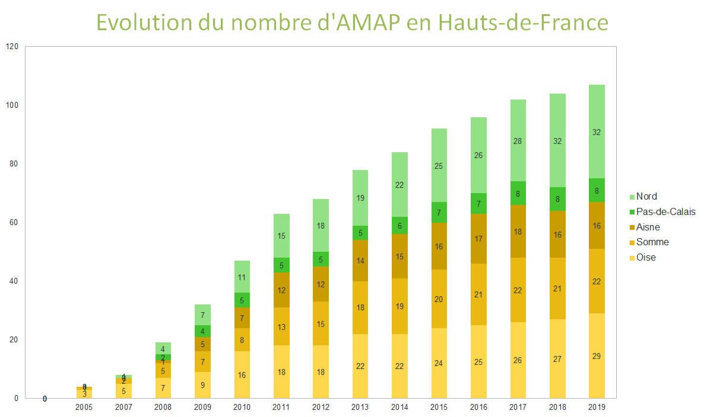
On constate qu'il y a 4 périodes distinctes dans cette évolution :
- La première va de 2005 à 2007 : ces sont les précurseurs. Sans accompagnement ni modèle en place, ces premières AMAP se sont montées en tant que pionnières, telles l'AMAP de Beauvais ou celle d'Amiens.
- La deuxième va de 2007 à 2011 : il s'agit d'une période de création massive, avec une augmentation de 800 %.
- Puis de 2011 à 2016, la progression continue mais de manière moins accélérée (environ 50 %).
- Enfin, depuis 2016, la croissance des AMAP s'est stabilisée (solde positif de 1 à 2 AMAP par an en moyenne).
Chaque département semble suivre ces tendances-ci, exceptés le Pas-de-Calais et l'Aisne qui est le seul département à connaître une décroissance de 2 AMAP. Il serait intéressant de connaître les raisons de ces deux disparitions : arrêt des producteurs, désertion des consom'acteurs, problèmes de gestion, désengagement des gérants des AMAP... C'est en tout cas le seul exemple de récession sur la région.
Une visualisation de cette évolution est aussi montrée en figure 3.
Pour connaître l'évolution du nombre d'AMAP sur le territoire nous nous sommes appuyés sur les dates de créations de ces dernières à partir d'une base de données fournie par le réseau AMAP-HDF. Cependant de nombreuses AMAP ne semblent pas avoir communiqué leur date de création. Nous nous retrouvons alors avec une différence de quantité de données entre les départements de l'ancienne Picardie, où nous avons une base de données relativement complète, et ceux du Nord-Pas-de-Calais où l'on observe un manque d'information. De ce fait, nous ne pouvons que caractériser l'évolution du nombre d'AMAP sur l'ancienne région Picardie.
En s'appuyant sur la figure 3, on peut observer une implantation géographique relativement équilibrée sur l'ensemble du territoire à partir de 2009-2010 (période où de nombreuses AMAP ont été créées dans l'Aisne). L'Oise à toujours été le département avec le plus grand nombre d'AMAP, suivie par la Somme puis l'Aisne. Au final, nous n'observons pas un schéma particulier dans la localisation des nouvelles AMAP en Picardie au fil des années.
2.3.2. Situation actuelle des AMAP en HDF et comparaison à l'échelle nationale.
Au final, nous arrivons en 2020 avec une répartition telle que montrée en figure 4. Celle-ci nous permet de constater que les AMAP sont plus nombreuses dans les espaces urbains et plus particulièrement les grandes villes : la métropole de Lille en compte plus d'une dizaine et Amiens en possède 4 au sein de la ville, par exemple. Une population plus nombreuse semble donc entraîner un plus grand nombre d'AMAP, comme le montrent la conurbation lilloise et le sud de l'Oise- frontière avec l'Île-de-France - qui semblent davantage peuplées d'AMAP que le reste des Hauts-de-France.
Tout d'abord, il est important de noter que tous les producteurs n'ont pu être recensés. On remarque même une absence d'AMAP entre Amiens et Arras, au niveau du Pas-de-Calais. Manque de données du site des AMAP HDF ou réel absence d'AMAP dans cette zone ? On peut formuler l'hypothèse que cette séparation spatiale sur le territoire est un vestige des anciennes régions du Nord-Pas-de-Calais et de la Picardie. Notre analyse permettra de confirmer - ou d'infirmer - cela mais nous pouvons déjà discuter de la répartition par département avec la figure 5.
En termes de statistiques, le site recense actuellement une centaine d'AMAP - 115 pour être précis- en Hauts-de-France, fournies par plus de 190 producteurs. On obtient ainsi la répartition en pourcentage par département comparée à la répartition de la population régionales et présentée en figure 5 :
| Aisne | Nord | Oise | Pas-de-Calais | Somme | Total | |
|---|---|---|---|---|---|---|
| AMAP | 15% | 30% | 27% | 7% | 21% | 107 |
| Population | 9% | 43% | 14% | 24% | 10% | 5 978 26612 |
Cette comparaison nous montre que la relation entre la population et le nombre d'AMAP n'est pas si évidente que cela. L'Aisne possède un quota d'AMAP à peu près équivalent à sa population mais le Nord, l'Oise et la Somme ont un ratio d'AMAP allant de 50 % supplémentaire au double du pourcentage de leurs populations ; et à l'opposé, le Pas-de-Calais en possède très peu au vu de sa population. Comment expliquer cela ? Une piste pour pour expliquer le faible nombre d'AMAP de ce département est la présence d'une agriculture très intensive caractérisée par de grandes cultures - de céréales, betteraves et pommes de terre principalement - occupant la majeure partie du paysage. Cela est confirmé par les derniers chiffres13 de 2014 (avant le remaniement des régions), montrant que le département représente à lui seul environ 4% de la production nationale, justement grâce à ses grande cultures. On peut alors formuler une hypothèse supplémentaire sur le fait qu'un territoire de grandes cultures empêche ou n'est pas favorable l'implantation de nouvelles AMAP.
Une autre hypothèse consisterait à dire que le plus faible nombre d'espaces urbains dans ce département couplé à d'autre modes de distributions en circuits courts déjà présents14 rend l'implantation de la démarche AMAP difficile dans ce territoire. Au vu de nos résultats, on peut considérer que c'est l'hypothèse la plus probable.
Par ailleurs, pour situer le contexte des HDF par rapport au contexte global des AMAP, une autre comparaison est effectuée en figure 6 pour l'ensemble des régions françaises.
Ces chiffres présentés en figure 6 ont été obtenus via [Réseau-AMAP, 2020] et [INED, 2020] qui donnent respectivement le recensement des AMAP par anciennes régions et le recensement de la population par nouvelle région. Un recoupement par nouvelle région donne nous donc les résultats ci-dessus où l'on observe une moyenne normée de 2,6 AMAP par région et pour 100 000 habitants, ainsi qu'une moyenne (hors Île-de-France) de 115 AMAP par région (cf. Annexe G), en France métropolitaine. On remarque que la Corse n'en possède que 8 mais que cela reste proche de la moyenne normée par habitants. Par ailleurs on remarque que la région la plus peuplée en AMAP est sans surprise l'Île-de-France étant donné que c'est aussi la plus peuplée. Elle est suivie de près par la région Auvergne Rhône-Alpes, région déjà présentée comme active au travers de l'étude de [Mundler, 2007]. Au final, les HDF se situent presque au niveau de la moyenne avec ses 115 AMAP mais restent en dessous de la moyenne concernant le nombre d'AMAP par région pour 100 000 habitants. On pourra donc considérer que nous ne traitons pas un cas particulier par rapport à l'échelle de la France, mais plutôt un cas relativement moyen.
Ce recensement des AMAP et l'état de l'art dans sa globalité nous ont montré le manque criant de données sur le sujet des AMAP. En effet, le sujet étant récent, en évolution constante et les AMAP sans cesse changeantes, on a pu voir qu'il n'existe pas ou peu d'enquêtes récentes sur le profil des amapiens, et pas d'enquête globale sur le réseau AMAP-Producteurs-AMAPiens. Par ailleurs, nous n'avons rien trouvé concernant à un état de l'art sur les HDF, à notre connaissance. Cette difficulté à trouver de la donnée nous a amené à la compléter nous-même par la suite, et surtout, à adopter une méthodologie rigoureuse pour rassembler toutes ces données et les analyser de manière cohérente.
3. Méthodologie d'étude
3.1. Relations dans les réseaux courts
Réduire les circuits courts et donc les AMAP à une simple relation économique (flux de nourritures en échange d'un flux monétaire) serait mal comprendre leur dimension sociale et durable. En effet, le consom'acteur attend de la culture paysanne qu'elle respecte les besoins en nourriture et l'environnement tout en contribuant à l'amélioration de la qualité de vie du producteur (paiement au juste prix, financement en début de saison et donc avant culture) et du consommateur (qualité des produits distribués). La force et la pérennité de ces réseaux sont alors basées sur la relation de confiance et la coopération entre les différents acteurs : producteurs et consom'acteurs. Nous pouvons nous appuyer sur une liste des facteurs, adaptés à tout type de réseaux d'échange agroalimentaire, qui détaillent l'importance des relations sociales pour ces réseaux : le partage de l'information concernant les coûts des différentes opérations, la durée de la relation, la fiabilité, l'ouverture, l'honnêteté, un équilibre des pouvoirs et une communication directe [Jaroz, 2000].
Pour décrire les spécificités du réseau producteur-consommateur, nous pouvons nous appuyer sur le champs heuristique développé par Lewis Holloway [Holloway, 2007]. Il regroupe des thèmes que l'on va chercher à préciser : les sites de production, les méthodes de production, la chaîne d'approvisionnement, la zone d'échanges, les interactions entre producteur et consom'acteur, les motivations pour la participation et la constitution d'un groupe [Holloway, 2007]. Approfondir ces thématiques avec en filigrane les réseaux AMAP pourra alors nous être utile à la réflexion et l'élaboration de notre base de données.
3.2. Objectifs
De cela, nous pouvons déterminer et présenter les objectifs de notre étude comme suit :
AMAP :
- Donner un aperçu de ce que sont et de ce que proposent les AMAP aujourd'hui.
- Analyser la disposition spatiale des AMAP et leurs relations géographiques aux producteurs qui les fournissent.
AMAPien :
- Donner une photographie de l'AMAPien et étudier les potentielles différences entre les résidents urbains et ruraux.
- En sondant leurs modes de consommation.
- Ainsi que leur profil social.
Producteur :
- Découvrir les types de producteurs en AMAP.
- Faire état de leur répartition géographique et de leur lien à l'AMAP.
- Analyser leur profil social.
Confirmer ou infirmer la perception de l'AMAP - vue en état de l'art - selon les AMAPiens et les producteurs, notamment sur les valeurs fondamentales qu'elle représente.
Ainsi, notre étude portera sur l'analyse de ces relations sociales à travers différentes enquêtes et des relations géographiques grâce à un traitement SIG. Le croisement de ces différentes méthodes et données va alors pouvoir nous permettre de comprendre et rapporter la situation de la démarche AMAP dans les Hauts-de-France.
Et l'outil commun à ces deux sous-parties est la base de données, qu'il nous faut donc formaliser.
3.2. Formalisation de la base de données
L'élaboration d'une base de données est l'outil central de cette étude pour localiser, étudier et formaliser le réseau des AMAP de HDF et les relations entre producteurs et AMAP. Pour cela nous avons décidé de nous orienter vers l'utilisation du formalisme UML (Unified Modeling Language) pour faciliter la collecte des données brutes . En effet, l'UML est un moyen graphique de représenter la logique d'un système. Cette méthode semble bien adapté à la conception d'une base de données car c'est un langage orienté objet (ODD) et adapté au préalable d'un système d'informations géographiques (SIG) notamment par son formalisme, son orientation objet et la prise en compte des aspects dynamiques [Laplanche, 2002].
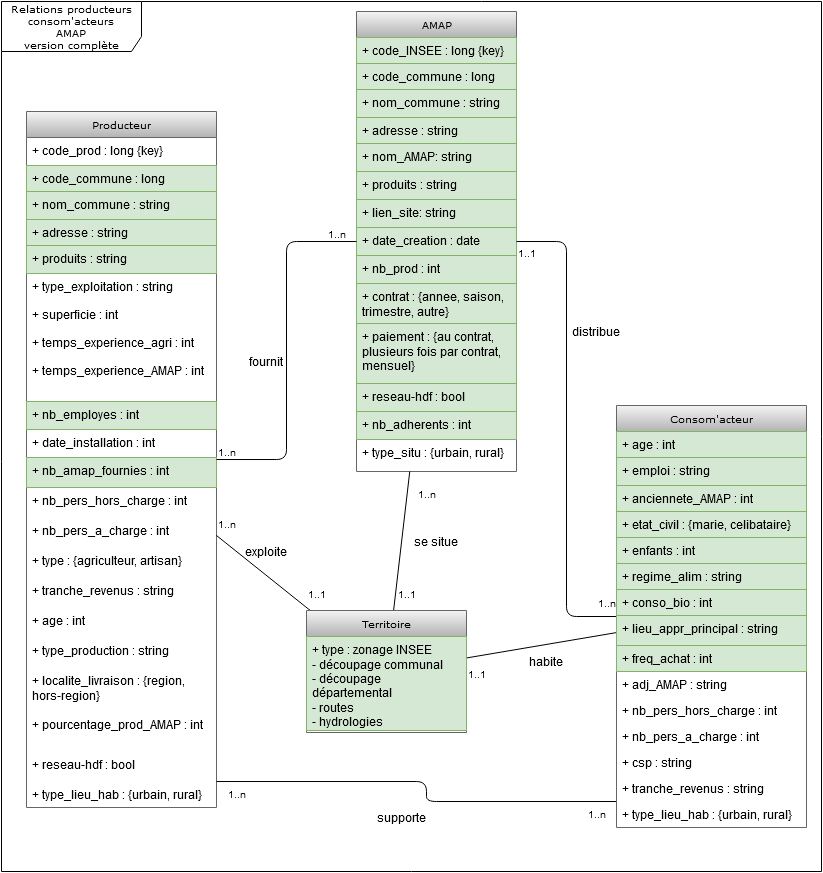
Ce modèle va alors nous permettre de formaliser de manière graphique sous forme d'un "diagramme de classe" le fonctionnement de la démarche AMAP et les interactions entre les différents acteurs. On peut alors saisir l'importance qu'a eu l'identification des relations entre les quatre classes présentes dans notre réseau : le producteur, l'intermédiaire de distribution, le consommateur et le territoire.
Le diagramme ci dessus représente la base de donnée idéale que nous avons imaginé pour pouvoir traiter pleinement notre sujet. Nous avons notifié en vert les données que nous avons, au final, pu collecter et analyser. On retrouve, alors, l'idée de circularité entre les différents acteurs du réseau : le producteur fournit l'AMAP, qui distribue à l'AMAPien, qui supporte le producteur. Comme représenté sur le diagramme de classe, le territoire semble être au centre des ces interactions, notre hypothèse étant que ce dernier conditionne la localisation de ces différents acteurs.
3.3. Des données aux AMAPs
Un Système d'Information Géographique (SIG) est utilisé pour traiter, analyser et représenter des données spatiales et géographiques dans le but de répondre à nos besoins analytiques. Il s'agit d'utiliser les différents attributs composant notre base de données comme étant des indicateurs (représentés de manière différente selon leur type) pour composer plusieurs cartes thématiques.
L'analyse des différentes dynamiques territoriales correspond à la juxtaposition de ces différentes cartes. Il semble alors intéressant de comparer les informations recueillies caractérisant les AMAP et des informations démographiques, économiques, sectorielles caractérisant les territoires ou des informations sur la structuration de l'espace [Scheffer, 2010].
Pour cette étude nous avons utilisé le logiciel libre QGIS. Notre base de travail pour la description du territoire s'appuie sur plusieurs bases de données issues de l'INSEE (zonage en aires urbaines, IRIS) ou de l'IGN (réseau routier, réseau fluvial) pour décrire le territoire à l'échelle de la région des Hauts-de-France. Couplé à la localisation des AMAP et des producteurs que nous avons pu géolocaliser grâce aux données recueillies (via l'utilisation du plugin QBANO conçu par CREASIG).
Notre étude spatiale est réalisée à partir d'une base de données constituée grâce aux différents annuaires des AMAP. S'il a été assez simple de récupérer de nombreuses informations sur les AMAP (adresse, produits, etc.), la récupération de données concernant les producteurs fut beaucoup plus complexe et notre travail s'appuie sur une base de donnée malheureusement incomplète. En effet, le meilleur moyen de constituer une base de données "producteurs" est de se fier aux contrats liant l'amapien à ces derniers. On peut alors catégoriser deux cas, les AMAPS qui travaillent avec de nombreux producteurs et qui possèdent des moyens de communications (site internet, Facebook) mis à jour régulièrement, on y retrouve alors des informations bien centralisées et claires. A l'opposé se trouvent des AMAP toujours actives mais dont le contrat n'est pas rendu public en ligne. Au final nous avons réussi à dénombrer 130 producteurs fournissant un peu moins de la moitié des AMAP des Hauts de France. Pour la localisation des usagers nous nous appuyons sur l'enquête que nous avons diffusée.
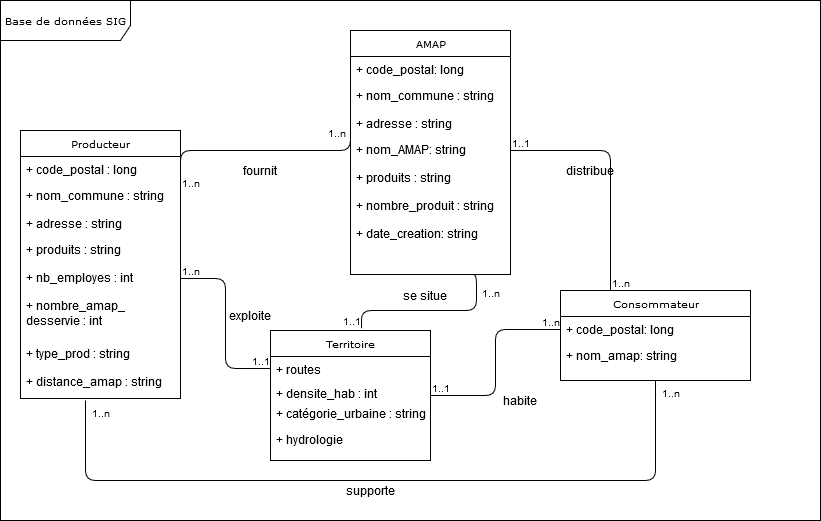
Au final et en ce qui concerne l'analyse spatiale, notre base de données se réduit à ce qui est représenté par le diagramme de classe UML ci-dessus. Celui-ci est bien moins complet que la figure 7, mais il tient compte des contraintes rencontrées pendant l'étude. On y retrouve des acteurs décrits par moins d'attributs faute de données accessibles en ligne. Pour le découpage du territoire nous nous sommes concentré sur les informations de densité et de catégories urbaines fournies par l'INSEE
3.4. Conception des enquêtes
3.4.1. Les enquêtes comme sources de données complémentaires
Notre état de l'art nous a permis de nous rendre compte de la difficulté à obtenir des informations sur les AMAP et les consom'acteurs en général. De ce fait, nous avons décidé d'aller chercher la donnée complémentaire nous-même en interrogeant directement les acteurs via des sondages. Ainsi nous avons réalisé 3 enquêtes différentes pour chacun des acteurs : les AMAPiens, les producteurs et les AMAP elles-mêmes ; et ce afin d'étudier leur profils respectifs. Pour cela , nous avons choisi d'utiliser l'outil Framaforms, qui est similaire, à Google Forms, mais libre. Les enquêtes ont été développées avec une page par thématique où le sondé répond de manière classique : saisie libre, choix unique, choix multiple, échelle de Likert... Dans l'ensemble les questions étaient plutôt fermées afin de faciliter l'exploitation des résultats. Cela a pu rendre certaines réponses moins subtiles mais c'était nécessaire étant donné l'outil utilisé - qui n'est pas fait pour des sondages avancés et qui nous a causé quelques difficultés sur son fonctionnement lors de la conception. Dernier point de conception mais non moins important, il faut noter qu'aucune question de nos enquêtes n'était obligatoire : les sondés répondaient librement aux questions qu'ils souhaitaient, d'où certains nombres totaux de réponses par questions qui diffèrent.
3.4.2. Présentation des enquêtes
Chaque enquête a été envoyée par l'AMAP'Monde - où nous avons un contact - au Réseau AMAP-HDF et dont font partie nombre d'AMAP et de producteurs.
3.4.2.a) AMAP
L'enquête sur les AMAP permet d'acquérir des informations générales sur la structure à laquelle sont rattachés les AMAPiens et les producteurs. Cette enquête est la plus simple des 3 : elle ne comporte que 12 questions. Le but de cette enquête était d'avoir une confirmation de certaines réponses faites par les AMAPiens et les producteurs - sur les produits proposés par exemple - et d'avoir aussi un aperçu du point de vue AMAP sur l'ensemble de la démarche. On en retire 26 répondantes sur les 115 recensées.
3.4.2.b) AMAPiens
Cette enquête a été divisée en 3 thèmes :
- Vous et l'AMAP : questions les plus spécifiques sur leur relation avec l'AMAP.
- Vos habitudes de consommation : régime alimentaire, approvisionnement, ...
- Votre profil : composition du ménage, ville, âge, revenus, ...
avec un total de 17 questions. En plus de nous permettre de déterminer les 3 points présentés, ce questionnaire nous a fourni de la donnée spatiale via la commune et le code postal de résidence des AMAPiens. 516 AMAPiens ont répondu à l'appel.
3.4.2.c) Producteurs
Cette enquête a elle aussi été divisée en 3 parties :
- Vous : composition du ménage, ville, âge, revenus, ...
- Votre exploitation : questions relatives au métier du producteur.
- Vous et l'AMAP : questions les plus spécifiques sur leur relation avec l'AMAP.
avec cette fois-ci davantage de questions que le sondage précédent, soit 26 questions. Le point de vue des producteurs nous a permis d'avoir un autre angle d'analyse par rapport à l'AMAP et aux AMAPiens. Seuls 16 producteurs ont répondu à l'enquête.
Cela dit, nous pouvons présenter les résultats dans le même ordre auquel nous avons procédé pour enquêter : les AMAP, puis les AMAPiens, et enfin les producteurs.
4. Portrait du réseau des AMAP des HDF
4.1. AMAP
4.1.1. Présentation de l'échantillon
Les premières cartes que nous présentons représentent la localisation des AMAP dans la région des Hauts de France (informations collectées grâce au recensement internet, 155 AMAP). La région est découpée en départements, puis en communes qui sont représentées en fonction de leur catégorie urbaine issue de l'INSEE (2010)15 puis en fonction de la densité de population. Ces cartes vont nous permettre de décrire et de comparer l'implantation de ces acteurs sur le territoire régional en tenant compte de la spécificité de chaque territoire.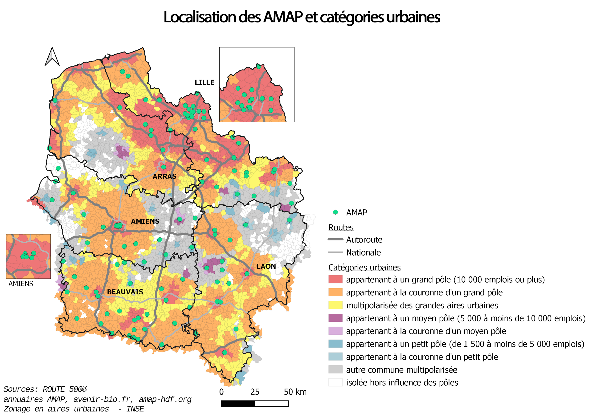
La carte ci-après correspond quant à elle, à la localisation des 26 AMAP sondées par le biais de l'enquête distribué à ces dernières.
Un rapide regard sur les noms des AMAP en figure 11 nous permet de voir qu'elles correspondent aux AMAP les plus représentées lors du sondage des AMAPiens (cf. Annexe F.). On peut donc présumer que le regard des AMAP que nous allons présenter est celui des plus actives. Par ailleurs, les AMAP sondées étant en quasi-totalité adhérentes au réseau AMAP-HDF (23 sur 26), on peut peut-être penser à un biais sur le fait qu'une majorité d'AMAP n'est pas encore suffisamment bien reliée au réseau et/ou active dans celui-ci pour répondre à ce genre d'enquête.
4.1.2. Des AMAPs principalement urbaine
| Catégorie urbaine de la commune | Décompte |
|---|---|
| appartenant à un grand pôle | 53 |
| appartenant à la couronne d'un grand pôle | 26 |
| multipolarisée des grandes aires urbaines | 10 |
| appartenant à un moyen pôle | 3 |
| appartenant à la couronne d'un moyen pôle | 0 |
| appartenant à un petit pôle | 9 |
| appartenant à la couronne d'un petit pôle | 0 |
| autre commune multipolarisée | 11 |
| isolée hors influence des pôles | 3 |
Nous pouvons constater que quatre AMAP sur cinq font partie d'une commune appartenant ou étant sous l'influence d'un grand pôle. Ces grands pôles correspondent à la région lilloise jusqu'à Arras, à Amiens et le sud de la région (zone frontalière et nettement influencée par l'île de France). La localisation des AMAP s'explique car le public cible est essentiellement urbain (selon notre enquête réalisée auprès des consommateurs 78% d'entre eux réside dans une commune appartenant à un grand pôle ou sa couronne et 75% d'entre eux réside dans une commune typée urbaine) et la notion de proximité géographique est l'un des attraits importants lorsque l'on choisit de consommer par l'intermédiaire d'une AMAP. L'hypothèse qu'une forte densité de population entraîne une densité proportionnelle d'AMAP pourrait sembler correcte avec les exemples de la ville d'Arras ou de Lille. Cependant on peut noter une particularité intéressante, la bande de forte densité en dessous de l'agglomération de Lille, organisée autour des autoroutes A26 et A21, reliant les villes de Douai, Lens et Béthune ne possède aucune AMAP malgré une densité largement plus importante que le reste de la région.
De ce constat, on observe également le peu d'AMAP dans les communes se situant en dehors des grands pôles régionaux. C'est le cas du sud-ouest du Pas de Calais et du nord de l'Aisne. Cette idée est confortée par la flagrante absence d'AMAP sur les communes ayant les densités de population les plus faibles (0 à 1 habitant au kilomètre carré).
Par ailleurs, nous pouvons constater que les AMAP sondées sont relativement homogènes dans leur distribution d'ancienneté. Hormis un léger ressaut en 2009-2010 puis en 2019, la progression régulière d'une à deux AMAP par an présentée dans l'état de l'art se retrouve ici.
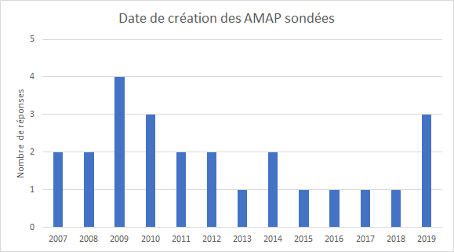
Ensuite, on remarque que le nombre d'adhérents moyen par AMAP se situe autour de 50 personnes. Une autre question nous permet de savoir par ailleurs que le nombre d'adhérents tend à se stabiliser dans les AMAP, voire à légèrement augmenter. On peut alors supposer une explication à l'implantation de nouvelles AMAP: chaque AMAP nouvellement créée atteint en peu de temps son plafond d'une cinquantaine d'adhérents, et il faut attendre qu'une autre AMAP se créée pour répondre à la demande croissante.
Par ailleurs, nous pouvons observer l'âge moyen des AMAP en fonction de leur taille selon trois catégories : petite (< 35 adhérents), moyenne (de 35 à 60) et grande (plus de 60). Il en ressort que les petites se sont formées en 2014, celles de taille moyenne en 2012 et enfin les grandes en 2010 (moyennes pondérées). On peut donc supposer que plus une AMAP est ancienne et plus elle aura tendance à grossir et à se doter de nouveaux adhérents.
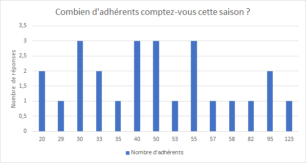
La figure 15 nous montre que les AMAP sont fournies en moyenne par 5 producteurs différents, chacun fournissant un type de produit différent. Bien que les superficies des cultures varient d'un producteur à l'autre, on peut ,alors, supposer que cela correspond bien à une provision pour 50 adhérents.
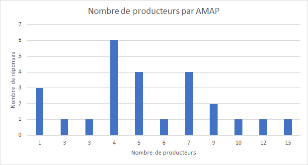
Par ailleurs, une question sur les produits distribués au sein des AMAP nous confirme ce qui a été présenté en état de l'art : les légumes constituent le produit de base de toute AMAP (la totalité des sondés en proposant) et les produits secondaires les plus fréquents semblent être les fruits, le pain, les oeufs et le fromage (plus de 18 réponses sur 26). Ce sont des résultats que nous retrouverons par la suite avec les AMAPiens.
En revanche, la question sur les modalités de contrats infirme notre état de l'art (2.1.3). Non, l'abonnement à la saison payé en une fois ne constitue pas la norme : la tendance semble plutôt être de faire des contrats à l'année (15 sur 26) que les consom'acteurs payent en plusieurs fois (19 sur 26). Bien que cela ne remette pas en question la stabilité des revenus pour les producteurs - puisqu'il s'agit de paiements au moins bi-mensuels ou trimestriels au vu des réponses -, cela montre que les AMAP se sont dotées de flexibilité au cours du temps. En effet, on dénote même quelques arrangements particuliers comme des contrats de durées différentes selon les produits proposés (2 cas). Dans cet exemple, les produits hebdomadaires - comme les légumes - sont facturés à l'année tandis que les plus ponctuels - comme le fromage - sont facturés à la saison. Au final ce fonctionnement semble plutôt s'adapter à la saisonnalité des produits, occasionnant sans doute une gestion plus simple et plus naturelle des stocks.
Cette flexibilité s'illustre aussi par la gestion des paniers : une absence lors d'une distribution est en général anticipée par la personne en question, mais les réponses font état de toutes sortes d'arrangements. En effet, soit une personne est choisie pour prendre le panier à la place de l'absent (23 sur 48), ou bien le panier peut être proposé à la revente aux autres AMAPiens (8 sur 48), ou encore être donné à des associations caritatives (7 sur 48).
Ce dernier point nous permet d'aborder l'ouverture des AMAP sur le monde extérieur. Ces dernières sont une majorité à pratiquer des actions solidaires (16 sur 26) via des repas solidaires ou des distributions gratuites, entre autres ; et les bénéficiaires en sont les restos du coeur et le secours populaire, par exemple. Ces actions solidaires s'accompagnent d'une volonté d'éducation. Ainsi, elles sont moins de la moitié à organiser des évènements publics tels que des conférences ou des festivals ; mais elles sont une majorité à organiser des visites sur exploitations. On voit donc que la solidarité des AMAP n'a pas de frontières et que ces dernières s'attachent à sensibiliser aussi bien ses consom'acteurs en interne que le grand public en externe.
Pour conclure et de manière globale sur la localisation des AMAP, nous pouvons affirmer que les AMAP se situent en général dans les grands pôles. Les AMAP sont apparues dans la région des Hauts de France en 2005 et la démarche n'a cessé de croître en se répartissant de manière relativement homogène dans deux bassins qui canalisent la majeure partie des acteurs : la région de Lille, Lens et le sud des Hauts-De-France. Cela laisse ainsi deux territoires où l'on peut observer une relative absence des AMAP : l'ouest du département Pas-De-Calais et le nord de L'Aisne.
Au final, cette enquête nous montre les AMAP comme étant des structures à taille humaine, flexibles car étant calées sur la saisonnalité des produits et solidaires aussi bien pour ses membres que pour les personnes en besoin en dehors de la démarche AMAP. Voyons donc ce qu'il en est avec l'enquête sur les AMAPiens.
4.2. AMAPiens
4.2.1. Présentation de l'échantillon sondé
Cette carte représente la localisation des consommateurs ayant répondu au sondage sur un fond de carte présentant la densité de population par communes. On y a ajouté la localisation moyenne de l'ensemble des AMAP et des producteurs.
Comme déjà évoqué on peut voir apparaître dans la localisation des AMAP deux larges bassins qui canalisent une grande partie des acteurs. Ce sont le département du Nord et le sud ou centre de la région (département de l'Oise, l'est de la Somme et l'ouest de de l'Aisne) et cela se confirme en analysant la localisation des consommateurs et leur regroupement géographique. Nous pouvons alors différencier deux formes de concentration d' AMAPiens : la première autour des espaces urbains denses, comme la métropole de Lille, Douai, Amiens ou à la frontière avec l'Île-de-France et la seconde, réticulaire qui s'étend le long de la vallée de l'Oise et des axes de transports. Nous pouvons noter que nous ne retrouvons pas de forme longitudinale aux abords des grands axes routiers qui ne semble pas structurants.\ On observe que les localisations moyennes des AMAP, producteurs et AMAPiens sont très proches du centre de la région. Nous pouvons en conclure que la démarche AMAP est bien équilibrée entre les deux grands bassins cités précédemment, mais aussi que la répartition est-ouest est homogène.
Ainsi la figure 16 nous permet de vérifier que l'échantillon d'AMAPiens sondé est relativement bien réparti spatialement et représente bien la répartition réelle des AMAP sur le territoire des Hauts de France.. En revanche, les points représentant le nombre d'Amapiens qui ont répondus (1, 15 et 30 personnes) sont peu représentatifs et sont davantage spécifiques à notre enquête, notamment puisque l'Oise possèderait une plus forte densité d'AMAPiens que les grands pôles urbains ; or cela s'explique plus par le réseau d'AMAPiens fortement sollicité pour le sondage dans l'Oise.
| Aisne | Nord | Oise | Pas-de-Calais | Somme | Total | |
|---|---|---|---|---|---|---|
| AMAP | 15% | 30% | 27% | 7% | 21% | 107 |
| Sondés | 24% | 24% | 35% | 2% | 15% | 503 |
Hormis la légère sur-représentation de l'Oise et de l'Aisne, cette comparaison en figure 17 nous permet de confirmer que notre échantillon est plutôt représentatif de la population AMAPienne et que nos 516 réponses traitées - le 503 correspondant aux personnes ayant donné leur localisation - seront cohérentes.
4.2.2. Présentation générale des AMAPiens
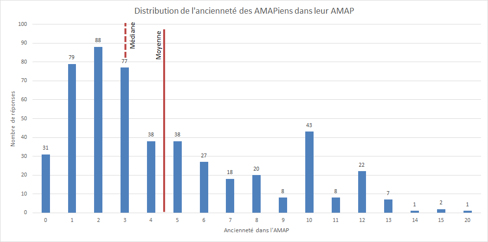
On constate que l'ancienneté des AMAPiens dans leur AMAP se constitue en deux vagues successives selon une distribution bimodale.
La première est apparue dans les années 2007-2008, après que la FAMAPP ait émergée en 2006 et que les AMAP aient gagné en popularité (cf. figure 2) - en témoignent les premières études comme celle de Mundler en 2007. On peut noter que la même année fut élaboré le premier Grenelle de l'environnement dont la médiatisation a pu en entraîner certains à rejoindre et/ou créer des AMAP. Cette période correspond également au moment charnière entre les deux premières périodes présentées en 2.3.1, i.e. entre les précurseurs et et les adhérents du grand boom des AMAP. [Hérault-Fournier, 2013] rattache cette catégorie aux "intimes", ceux qui ont adhérés et ne sont jamais partis depuis.
La seconde vague semble se situer aux alentours de 2014, au moment de la synthétisation de la charte des AMAP. On peut supposer qu'en conséquence, davantage d'AMAP se sont constituées à ce moment, séduites par un modèle ayant fait ses preuves ou par un effet de mode, ainsi que cette nouvelle charte plus synthétique. On peut aussi penser que la diversification de l'offre dans les AMAP remonte à cette période et aurait attirée plus d'AMAPiens. Par ailleurs, le nombre de places en AMAP étant limité, un phénomène de saturation peut vite survenir. Cette deuxième vague, peut donc avoir eu lieu aussi du fait d'un turn-over laissant plusieurs places pour de nouveaux arrivants - comme nous le confirme la figure 416. Les raisons d'un tel turn-over seraient : le changement de région des premiers AMAPiens - notamment les jeunes actifs qui sont souvent très mobiles -, ou bien ceux qui prennent goût au bio en circuit-court et qui décident de créer leur propre potager. Pour ces mêmes raisons, il est possible que les nouveaux AMAPiens soient adhérents d'AMAP relativement anciennes.
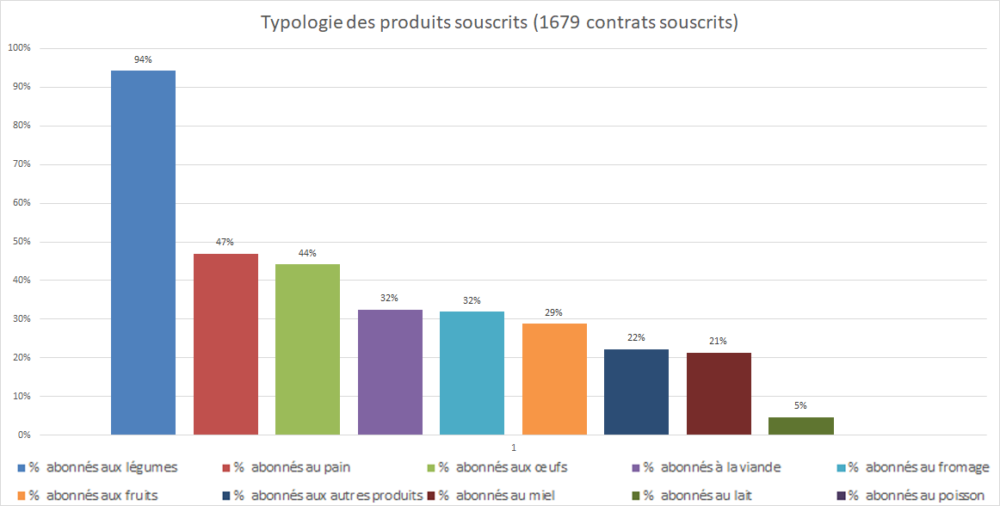
Sans surprise les légumes tiennent la majorité des contrats saisonniers étant donné qu'il s'agit de l'offre de base dans les AMAP. Le pain, les oeufs et la viande arrivent ensuite, ce qui semble logique dans l'optique d'une alimentation équilibrée où les consom'acteurs souhaitent ne se fournir principalement que via l'AMAP. On remarque cependant qu'aucun contrat de poisson n'a été recensé et ce alors que certaines AMAP sont situées en bord de mer (telles Berck ou Boulogne-sur-Mer). Est-ce dû à l'impossibilité de trouver des producteurs à des prix convenables17 ou bien parce que tous ont déjà un carnet de commandes bien rempli ? Ou encore est-ce un désintérêt de la population locale ? Il faudrait investiguer davantage leurs contextes territoriaux pour en savoir plus.
| Taille de l'AMAP (adhérents) | Nombre de contrats souscrits | Nombre de répondants | Taux de diversification |
|---|---|---|---|
| Petite (<35) | 124 | 48 | 2,6 |
| Moyenne (de 35 à 60) | 376 | 124 | 3,0 |
| Grande (60 et +) | 425 | 94 | 4,5 |
Par ailleurs, on peut remarquer que la taille de l'AMAP est liée à la diversité de l'offre au sein de cette dernière. La figure 20 nous montre qu'un AMAPien souscrit en moyenne à 2,6 produits différents dans une petite AMAP contre 4,5 pour un AMAPien des grandes AMAP.
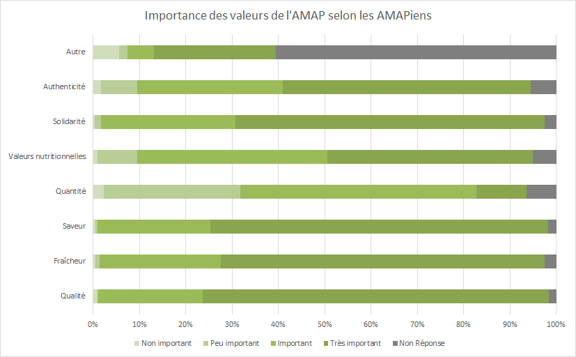
Nous avons demandé aux AMAPiens de noter de "moins important" à "très important" (échelle de Likert) les valeurs que leur semblait refléter l'AMAP selon eux.
Le classement montre que la distribution de la notation « important » et « très important » est très similaire sur de nombreuses valeurs, ce qui montre que les AMAPiens savent pourquoi ils viennent : une alimentation de qualité, i.e. des produits frais, savoureux et nutritifs. De ce fait la quantité est moins importante finalement pour les AMAPiens, car cela va du principe même de l'AMAP que de faire "moins mais mieux". Par ailleurs, sans doute que la fraîcheur des produits proposés rend tout surplus indésirable, car c'est autant de nourriture à devoir utiliser rapidement dans la semaine (les distributions étant hebdomadaires). Les valeurs de solidarité et d'authenticité sont, quant à elles, plus liées au réseau lui-même et sont une caractéristique intrinsèque des AMAP, d'où leur mise en avant ici. En outre, ce qui ressort de la catégorie "Autre" sont les mots "local", "proximité", "biologique", "convivial". Ces mots-clé font écho aux avec les motivations (cf. Annexe X) des consom'acteurs pour rejoindre une AMAP qui tiennent principalement en la volonté de manger sainement via un circuit-court.
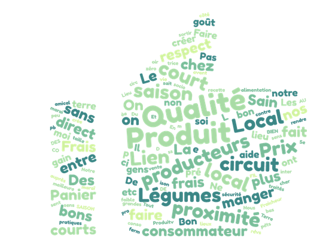
Par la suite, nous avons demandé aux sondés de donner des mots-clé concernant les avantages puis les inconvénients de l'AMAP selon eux.
Avantages (494 réponses) : il en ressort plusieurs mots-clé vus précédemment, comme la localité, le circuit-court, mais aussi la saisonnalité, la qualité et le lien semblent tout aussi importants.
Inconvénients (409 réponses) : le manque de choix dans les paniers (15%), il semblerait que les principaux désavantages de l'AMAP sont le peu de flexibilité sur les horaires (jour-heure, 9%), le prix qui semble trop élevé pour une certaine partie des consom'acteurs (3%) et les aléas dont ces derniers sont solidaires (5%). Cela montre qu'une certaine partie des AMAPiens ne sont que consommateurs dans un premier temps et suivent une mode de consommation. La solidarité n'est alors pas pertinente pour eux jusqu'à ce qu'il se sentent consom'acteur. Il faut cependant noter certaines réponses signalant "rien" ou "aucun" et qui apparaissent moins bien dans la génération du nuage de mots (16%).

Une autre échelle de Likert a été soumise aux sondés concernant leur consommation de produits alimentaires biologiques ou raisonnés - les deux possibilités en AMAP -, puis locaux. On peut constater qu'être AMAPien occasionne une consommation majoritairement bio ou raisonnée et surtout locale dans la vie de tous les jours.
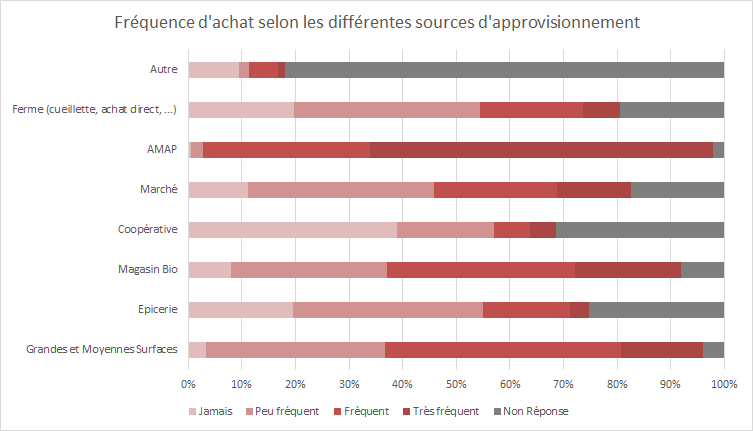
Une autre échelle sur les sources d'approvisionnement les plus fréquentes nous apprend, sans surprise, que l'AMAP est la source principale d'approvisionnement des consom'acteurs, suivie des Grandes et Moyennes Surfaces (GMS) ainsi que des magasins bio. Le premier s'explique par son aspect commun et le fait qu'on y trouve malgré tout des produits alimentaires que l'on ne trouve pas ailleurs et le deuxième corrobore le degré d'achat des produits alimentaires bio ou raisonnés vu précédemment.
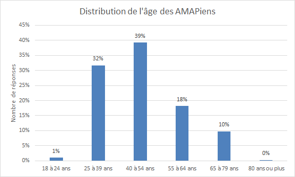
La distribution de l'âge des AMAPiens suit grossièrement une gaussienne centrée sur la plage d'âge de 40 à 54 ans qui constitue donc la moyenne et médiane. Cette même tranche est la plus représentée avec presque 40 % des sondés s'y trouvant.
| Âge | 18 à 24 ans | 25 à 39 ans | 40 à 54 ans | 55 à 64 ans | 65 à 79 ans |
|---|---|---|---|---|---|
| Néo-AMAPiens | 2% | 47% | 32% | 15% | 4% |
| AMAPiens intimes | 0% | 5% | 49% | 25% | 21% |
Par ailleurs une analyse croisée avec l'ancienneté des AMAPiens nous permet de voir que les nouveaux (<= 3 ans) sont très majoritairement des 25-39 ans (47%), là où les intimes (>= 10 ans) sont majoritairement des 40-54 ans (49%). On remarque donc que 25-39 ans est la tranche d'âge de prédilection pour l'arrivée des nouveaux AMAPiens et que ces derniers vieillissent avec leur AMAP jusque dans la tranche d'âge suivante 40-54 ans.
| Tranche d'âge | 18 à 24 ans | 25 à 39 ans | 40 à 54 ans | 55 à 64 ans | 65 à 79 ans | 80 ans ou plus | Total |
|---|---|---|---|---|---|---|---|
| Sondés | 1% | 32% | 39% | 18% | 10% | 0% | 512 |
| Moyenne nationale18 | 7% | 24% | 26% | 17% | 14% | 13% | 50 978 960 |
Par ailleurs une rapide comparaison avec la moyenne nationale nous permet de constater que les deux tranches d'âges 25-39 ans et 40-54 ans sont sur-représentées dans notre échantillon, là où les autres suivent relativement bien la moyenne - exceptés les extrêmes où les tranches d'âge ne correspondent pas exactement à celles de l'INSEE. Ces deux catégories correspondant aux actifs19, on peut conclure sur le fait que l'AMAPien est en moyenne et avant tout un actif.
Voyons les catégories socio-professionnelles pour commenter davantage cela.
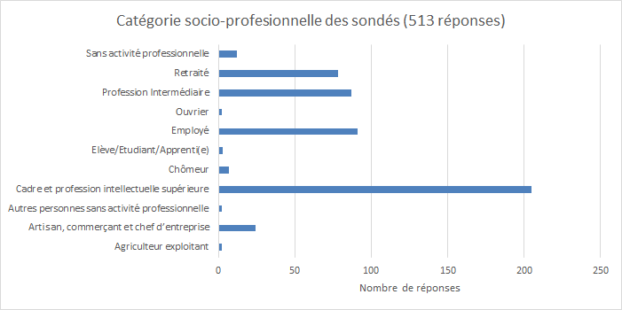
Comme explicité précédemment, la catégorie des cadres et professions intellectuelles supérieures (où sont inclus les artistes, professeurs du supérieur ou les médecins par exemple) est très représentée chez les amapiens avec près 40 % à elle toute seule. Viennent ensuite les employés et professions intermédiaires - dont un certain nombre de professeurs du secondaire - puis les retraités (qui n'est qu'une CSP, rappelons-le).
| En % | Part des agriculteurs exploitants | Part des artisans, comm., chefs d’entr. | Part des cadres, professions intellect. supérieures | Part des professions interméd. | Part des employés | Part des ouvriers | Autres |
|---|---|---|---|---|---|---|---|
| Hauts-de-France | 0,9 | 4,6 | 12 | 23,9 | 29,5 | 26,6 | 2,5 |
| France hors Mayotte | 1,4 | 6 | 16 | 24,7 | 28,6 | 21,7 | 1,7 |
| Sondés | 0% | 5% | 40% | 17% | 18% | 0% | 5% |
La comparaison avec les chiffres régionaux et nationaux nous confirme ce profil "cadre" de l'AMAPien, très exacerbé par rapport au reste de ses compatriotes. Par conséquent, le taux de professions intermédiaires et d'employés est bien en deçà des moyennes. Il nous faut cependant avertir sur le fait que les statistiques de l'INSEE ne concerne que les actifs de 15 à 64 ans (statistiques 2016), d'où l'absence de retraités ici. On voit donc le profil de l'AMAPien se dessiner plus clairement, d'autant plus que la distribution des CSP de la deuxième personne du ménage - conjoint ou autre - suit de très près cette première (cf. Annexe X). On a donc comme profil de l'AMAPien moyen un couple20 de cadres ou équivalent.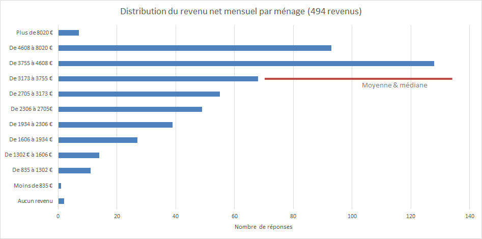
Enfin, nous avons abordé le revenu net mensuel du ménage du sondé en lui proposant de donner la tranche à laquelle il appartient. Il en ressort que le revenu moyen et médian se situe entre 3173 et 3755 €, soit presque plus de 1000 € au-dessus de la médiane nationale qui, elle, est plutôt centrée sur la tranche de 2500 € net mensuel par ménage.
Ces résultats passés en revue, nous allons pouvoir dresser le profil-type de l'AMAPien.
4.2.2.a) Profil-type
En synthèse, le profil de l'AMAPien moyen est âgé de 40 à 54 ans, vit en couple - ou équivalent - et sans enfant21. Lui et son.sa partenaire sont tous les deux issus de la catégorie socio-professionnelle des cadres et professions intellectuelles supérieures, accumulant un revenu du ménage net mensuel d'environ 3500€ par mois - soit un revenu supérieur à la médiane nationale (~2500€). Il est en AMAP depuis un peu plus de 4 ans et est principalement abonné à la distribution de légumes . Il y vient pour s'alimenter via un circuit-court et manger sainement, et achète ses autres produits alimentaires en bio ou raisonné par ailleurs. Il n'a pas de régime spécifique.
En comparaison avec 2.2.1.c), on peut voir que les aspects couple et régime spécifique supérieur à la moyenne nationale sont retrouvés mais que le reste du profil contraste avec celui dressé en Auvergne-Rhône-Alpes en 2007. En effet, là où l'AMAPien moyen était principalement employé ou issu de professions libérales, il est aujourd'hui cadre ou issu de professions intellectuelles supérieures. Ensuite, bien que l'AMAPien ressort comme étant engagé, on peut présumer qu'il est moins militant que décrit dans l'étude de 2007, à une époque où les initiateurs du mouvement étaient en avance sur la population en ce qui concerne les enjeux environnementaux et alimentaires.
4.2.2.b) Profil urbain vs. rural
On dénombre 393 AMAPiens en zone urbaine sur les 506 sondés dont nous avons eu la commune de résidence, soit 77,6 %. En comparaison, les AMAPiens en zone rurale sont 11322 (22,4 % donc). Ces chiffres correspondent de très près aux statistiques nationales de 77,5% de population urbaine en France [POP-FR, 2011]. De ce fait, nous allons le voir, le profil des AMAPiens urbains suit de près le profil-type global, là où les ruraux s'en démarquent un peu plus sur certains aspects.
Ainsi, si l'on reprend les premiers éléments présentés, à savoir l'ancienneté des AMAPiens et la typologie des contrats souscrits, les deux profils spécifiques suivent la même tendance que le profil global avec les deux mêmes vagues d'arrivées d'AMAPiens - dans des proportions différentes, bien entendu - et les mêmes contrats qui viennent en premier : Légumes, Pain, Oeufs et viande. On remarque seulement que les consom'acteurs ruraux présentent moins de favoritisme dans le choix de leurs produits, avec des proportions presques égales sur les produits secondaires.
Une autre différence, elle aussi relativement légère, concernant les profils ruraux est l'importance des valeurs de l'AMAP. Les traits caractéristiques du profil global sont davantage exacerbés dans le profil rural. Ainsi, on remarque qu'il ne reste toutes les valeurs relatives aux produits - Qualité, Fraîcheur et Saveur - ne sont plus notées qu'à "important" et "très important". Les notes "non important" et "peu important" ont totalement disparu sur ces valeurs-ci. Par ailleurs, la quantité semble encore moins importante que pour l'AMAPien moyen, et la solidarité est un lien encore plus fort.
Les autres points ayant attrait à l'AMAP ou aux modes de consommation ne présentent aucune différence notable pour les deux profils spécifiques. En revanche, c'est sur les caractéristiques des sondés et de leur ménage qu'on retrouve le plus de différences.
En effet, à commencer par l'âge : on retrouve légèrement plus de jeunes entre 25 et 39 ans en zone urbaine (+3 % comparé au profil global) et à l'inverse, une population plus âgée en zone rurale avec 10 % de 40-54 ans en plus. Cela peut s'expliquer naturellement par le dynamisme des zones urbaines qui attirent davantage de jeune.
En parallèle, on retrouve un plus grand nombre de cadres et de professions intellectuelles supérieures en zone urbaine avec plus de 40 % pour les sondés et plus de 45 % pour les 2ème personnes du ménage. En zone rurale on trouvera le phénomène inverse avec plus de retraités et d'ouvriers (20 % pour les deux), et davantage de retraités et de professions intermédiaires pour les 2ème personnes (20 et 15 % respectivement). Ces écarts représentent des différences de 5 % par rapport au profil global. Cela reste donc léger malgré tout. Enfin la différence la plus notable réside sans aucun doute dans le revenu net mensuel par ménage, présenté en figure 30.
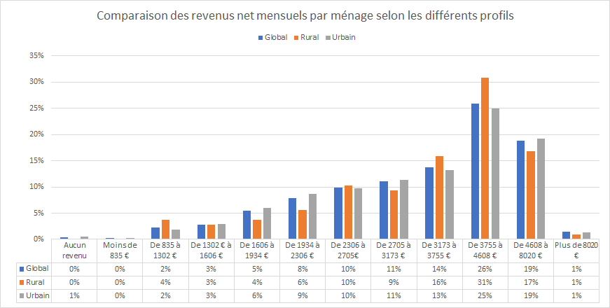
En effet, là où la moyenne et la médiane se situaient entre 3173 et 3755 € pour le profil global, on remarque que la population urbaine perçoit moins de revenus en moyenne (entre 2306 et 2705 €) mais est plus riche au global, avec une médiane entre 3755 et 4608 €. A titre de comparaison, la moyenne rurale est plus élevée (de 2705 à 3173 €) mais est plus modeste dans l'ensemble avec sa médiane située de 3173 à 3755 €. On peut donc dire que la population urbaine est plus riche mais présente aussi plus de disparités - des ménages plus aisés côtoient des ménages sans revenus par exemple -, là où la population rurale est moins riche mais plus homogène. Cela peut s'expliquer par la nature de la ville qui est plus disparate bien évidemment, mais aussi par la population qui y est plus jeune et donc qui abaisse le revenu moyen.
En résumé, nous pouvons voir que les AMAPiens ruraux et urbains ne présentent pas de traits caractéristiques très différents sur le plan de la perception des AMAP ou des modes de consommation. Leurs plus grande différences résident au final dans leur distinction urbain versus rural, autrement dit les effets de richesse, de catégorie sociale et d'âge de la population.
Nous avons pu constater la réalité des AMAP à travers les consom'acteurs, regardons maintenant à quoi elle ressemble vue par les producteurs.
4.3. Producteurs
4.3.1. Présentation de l'échantillon
Les deux cartes qui suivent exposent la localisations des 135 producteurs recensés grâce aux contrats disponibles sur les sites internet des AMAP. Le format est le même que pour la localisation des AMAP, nous conservons les fonds de carte en fonction de la catégorie urbaine (INSEE 2010) et de la densité de population des communes.
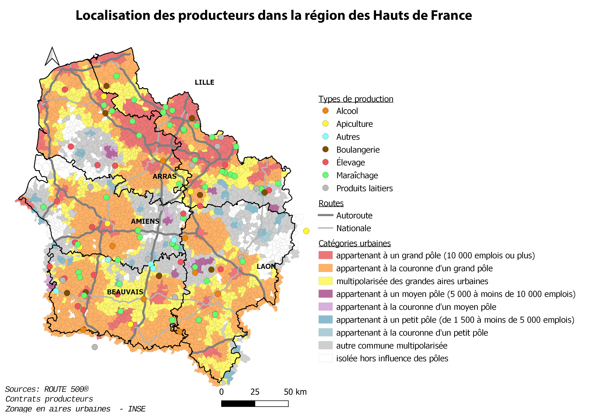
Bien que nous ayons très peu de réponses à notre enquête, nous pouvons voir en figure 33 que la répartition spatiale des sondés est homogène. Par ailleurs, il est à noter qu'ici producteur équivaudra à agriculteur étant donné qu'aucun artisan n'a répondu au sondage.
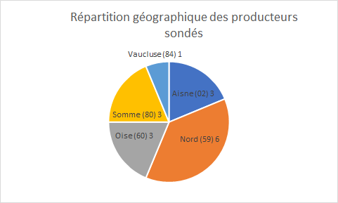
4.3.2. Présentation des résultats
| Catégorie urbaine de la commune | décompte |
|---|---|
| appartenant à un grand pôle | 18 |
| appartenant à la couronne d'un grand pôle | 46 |
| multipolarisée des grandes aires urbaines | 20 |
| appartenant à un moyen pôle | 1 |
| appartenant à la couronne d'un moyen pôle | 1 |
| appartenant à un petit pôle | 3 |
| appartenant à la couronne d'un petit pôle | 0 |
| autre commune multipolarisée | 24 |
| isolée hors influence des pôles | 4 |
Parallèlement à la localisation des AMAPs, la localisation des producteurs est elle aussi située autour des grands pôles urbains : trois quart des producteurs se situent dans ces grandes aires urbaines, majoritairement dans les communes appartenant à la couronne d'un grand pôle. On observe ainsi, plus de producteurs dans les espaces moins denses.
| Catégorie urbaine de la commune | Alcool | Apiculture | Autres | Boulangerie | Élevage | Maraîchage | Produits laitiers |
|---|---|---|---|---|---|---|---|
| appartenant à un grand pôle | 2 | 2 | 13 | 1 | |||
| appartenant à la couronne d'un grand pôle | 4 | 3 | 5 | 8 | 20 | 6 | |
| multipolarisée des grandes aires urbaines | 2 | 3 | 2 | 4 | 4 | 5 | |
| appartenant à un moyen pôle | 1 | ||||||
| appartenant à la couronne d'un moyen pôle | 1 | ||||||
| appartenant à un petit pôle | 2 | 1 | |||||
| autre commune multipolarisée | 1 | 2 | 1 | 8 | 10 | 2 | |
| isolée hors influence des pôles | 3 | 1 |
En catégorisant les types de producteurs nous pouvons apporter un degré de précision supplémentaire sur leur répartition sur le territoire.\ Les éleveurs sont absents des grands pôles, cela s'explique car leurs exploitations demandent plus d'espace pour l'élevage des bêtes (en moyenne 80 hectares23 pour un élevage de bovin contre quelques hectares pour une exploitation maraîchère24). On peut alors observer une répartition égale entre une localisation dans les communes appartenant à la couronne d'un grand pôle et les autres communes multipolarisées ou les grandes aires urbaines et les communes isolée hors d'influence. Les exploitations maraîchères semblent, quant à elle, plus proche des AMAP car elles sont localisées majoritairement dans un grand pôle ou dans sa couronne.
Pour réaliser cette carte, nous avons relié les différents producteurs référencés aux AMAP qu'ils livrent. La distance moyenne entre ces deux acteurs est de 27 km. C'est une distance assez courte qui reflète bien l'esprit des circuits courts (notamment si l'on compare cette distance au milliers de kilomètres parcourus par certains aliments). Aussi, nous pouvons bien observer l'importances des grandes villes et la quantités de produits acheminées jusqu'à elle, comme à Amiens ou Beauvais. On ne compte que deux producteurs localisés hors de la région (dans les ardennes et le Val-d'Oise), ce qui confirme une nouvelle fois l'importance de la proximité géographique qui contribue à l'identité régionale et aux valeurs des AMAP. La majorité des producteurs fournissent une unique AMAP (108 producteurs soit 84%), ce sont en général les produits type du panier c'est à dire ceux issus du maraîchage (90% des maraîchers fournissent à une seule AMAP) au contraire des producteurs fournissant plus de 2 AMAP, qui sont majoritairement des éleveurs, ils représentent 35% des producteurs fournissant deux produits ou plus. Dernièrement cette carte met également en avant la dynamique des deux bassins dans lesquels la démarche AMAP est bien développée. En effet on peut observer, sauf exceptions, que la plupart des producteurs sont rattachés à une AMAP issue de l'ancien découpage régional (Picardie et Nord-Pas-de-Calais) et donc qui ont appartenu à une des deux anciennes fédérations (Réseau AMAP 59-62 et FAMAPP)25 maintenant fusionnées.

Par la suite, nous nous sommes intéressés aux distances séparant les producteurs des AMAP par type de produit. La représentation en aire de chalandise nous permet d'envisager la distance possiblement couverte par le transport des aliments.
Les maraîchers sont les producteurs les plus proches géographiquement des AMAP avec une distance moyenne de 19,3 km. Après ce sont les boulangers; ne possédant en général pas de boutiques, les lieux de production demandent un espace réduit et se situent quand même près des centres urbains et donc des lieux de distribution des paniers AMAP. Les produits laitiers ont une distance moyenne aux AMAP légèrement supérieure à la moyenne globale. Au delà des 30 km on retrouve l'élevage (que nous avons déjà précédemment identifiés comme éloignés des AMAP) et les produits moins présents dans les paniers : l'alcool, le miel et autres (tisanes, fleurs).
Pour conclure, cette dernière partie d'analyse spatiale nous confirme l'importance de la proximité géographique dans la démarche AMAP. Les produits phares comme les légumes et les fruits sont très proches de leurs lieux de distribution, respectant ainsi la démarche des circuits courts et l'engagement environnemental des différents acteurs qui composent l'AMAP.
L'étude des réponses à l'enquête nous permet par ailleurs de compléter l'analyse spatiale.
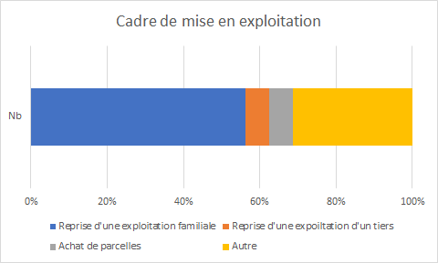
En ce qui concerne l'activité d'agriculteur, nous pouvons constater que la reprise d'une exploitation familiale représente la majorité des cadres de mise en exploitation, ainsi que le montre la figure 39
La création d'une nouvelle exploitation via l'achat de parcelles représente le deuxième cas le plus fréquent de mise en exploitation. Par ailleurs, les agriculteurs sondés pratiquent majoritairement une agriculture biologique (14 sur 16) et se sont installés directement en AMAP pour la plupart (11 sur 16).
Ensuite, nous leurs avons demandé de classer l'importance des filières de vente pour leur produit selon les 3 grandes catégories que sont la vente à un grossiste, la vente indirecte et la vente directe.
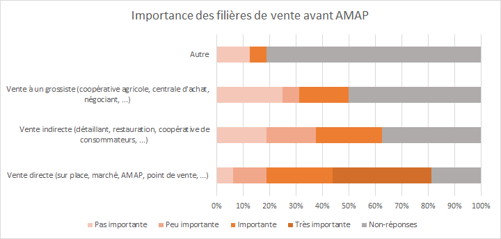
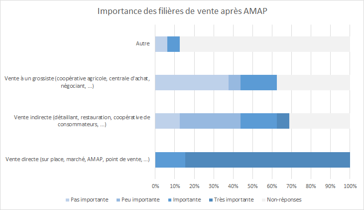
En cela, la figure 39 et la figure 40 nous montrent que le passage en AMAP semble provoquer un changement de filière de vente principale pour les agriculteurs. L'AMAP devient ainsi une filière majoritaire après en être devenu fournisseur. Et pour cause, ils sont une majorité à livrer au moins 2 AMAP (14 sur 16), ce qui leur permet alors d'écouler un bonne partie de leurs stocks en AMAP, avec la stabilité qu'implique cette démarche. On peut ainsi noter que sur les 16 producteurs sondés, plusieurs livrent des AMAP jusqu'en Île-de-France, preuve que l'on tend à prendre goût au système AMAP une fois rentré dedans. On remarque cependant que l'ordre chronologique d'arrivée dans les AMAP ne conditionne pas le niveau d'importance de l'AMAP pour le producteur. Autrement dit, la première AMAP contractée ne sera pas nécessairement celle à qui le producteur vendra la plus grande partie de sa production, au contraire.
La partie suivante reposait sur la relation du producteur à l'AMAP. La figure 41 nous montre que pratiquer une agriculture paysanne, établir et entretenir des liens de confiance et de solidarité avec les consom'acteurs, et rendre accessibles des produits de qualité sont des valeurs fondamentales au sein de l'AMAP. De plus la stabilité des revenus est un avantage très apprécié. On retrouve donc les valeurs primordiales de l'AMAP auxquelles l'on pouvait s'attendre.
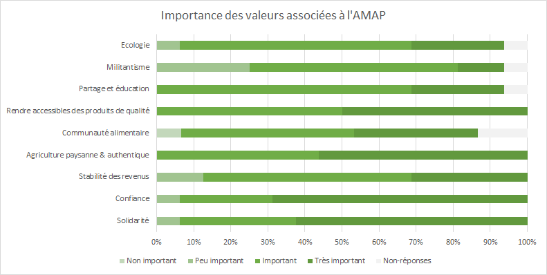
Dans les commentaires, il semble que le relationnel et l'échange humain sont les éléments les plus appréciés de la démarche AMAP. Et toutes ces valeurs sont corroborés par les motifs de mise en AMAP : qu'il s'agisse de limiter les pertes, de stabiliser les revenus ou d'être proche avec les consom'acteurs, les agriculteurs sont motivés les valeurs qu'ils perçoivent en l'AMAP. Il semblerait cependant que la création d'une nouvelle AMAP par le producteur lui même reste une exception et qu'il est plus fréquent que ce soit les AMAP qui contacte les agriculteurs.
4.4. Perspectives de l'étude
4.4.1. Limites et biais de l'étude.
Notre étude possède plusieurs biais qui viennent nuancer l'interprétation des résultats que nous avons pu présenter.
Comme explicité en 3. Méthodologie, la plateforme en tant qu'outil est une source de biais, notamment sur certaines questions posées où toutes les options de réponses n'étaient pas disponibles. Ensuite, il nous faut mentionner le manque de tests sur le questionnaire avant son déploiement : nous avons effectués quelques essais sur nos proches pour tester la compréhension spontanée des questions et la pertinence des choix de réponses, mais cela n'a pas constitué un panel suffisant. Cela s'explique notamment par le temps très réduit (3 mois) pour mener l'étude, construire, diffuser et traiter les enquêtes en plus de réaliser les recherches bibliographiques.
Par ailleurs chaque enquête par acteur avait ses défauts. Celle pour les AMAP n'a obtenu que 26 réponses sur les 115 que nous avons recensées, ce qui nous laisse avec des résultats difficilement généralisables à l'ensemble des AMAP de la région. Néanmoins, ces résultats restent révélateurs sur des points intrinsèques de la démarche AMAP, c'est pourquoi nous les avons tout de même présenté tout en gardant bien à l'esprit que l'échantillon est loin d'être représentatif de la population AMAP.
Le sondage pour les AMAPiens était de loin le plus représentatif avec 516 réponses traitées pour 545 reçues au total. Si l'on considère la moyenne de 50 consom'acteurs par AMAP et les 156 AMAP des Hauts-de-France, on peut estimer très grossièrement le nombre d'AMAPiens HDF à 5000, ce qui nous laisserait avec un échantillon de 10% de la population. Cela pourrait être représentatif dans le cas d'un tirage aléatoire parmi la population, mais comme ce n'est pas le cas, les résultats restent à prendre avec du recul.
Enfin, l'enquête pour les producteurs n'a récolté que 16 réponses, soit moins de 10 % de la population. On comprend donc que c'est le sondage le moins exploitable, c'est pourquoi nous avons retiré une majeure partie des résultats obtenus - notamment le profil social des producteurs - pour ne se concentrer que sur les parties encore pertinentes dans ce contexte. Les résultats présentés sur cette partie (statistique) sont donc à largement prendre avec des pincettes.
Au final, c'est majoritairement le manque de réponses qui limite les résultats de notre étude. Comme celle-ci a été effectuée en période de confinement, peut-être que la situation exceptionnelle a aussi été un facteur perturbateur - ou en notre faveur, il faudrait une autre étude en comparaison. On peut penser par exemple à l'afflux de mails en cette période qui a pu faire oublier de répondre à l'enquête. En tout cas, cela nous permet de voir les points d'amélioration pour un approfondissement ou une suite de l'étude.
4.4.2. Perspectives de l'étude.
On l'aura donc compris, le premier point d'amélioration serait de réfléchir à une manière d'obtenir plus de réponses de la part des différents acteurs pour agrandir notre base de données. Cela pourrait passer par une campagne de sondages annoncée par le Réseau AMAP-HDF suffisamment en amont pour préparer le terrain d'étude.
Ensuite, pour approfondir le sujet, les questionnaires en ligne peuvent être repris en questionnant plus précisément les acteurs sur les points qui ont fait défaut lors de cette étude ou qui étaient manquants. On peut par exemple penser à des questions permettant de mieux préciser les profils urbains/ruraux, aux questions sur les enfants à charges qui ont été biaisées ou encore des questions sur le sexe - pour les AMAPiens -, dans le cadre du profil social...
Enfin pour aller plus loin, on peut imaginer appliquer des modèles statistiques sur les différents échantillons pour vérifier différents profils et éventuellement prévoir des tendances.
5. Conclusion
Les Hauts-de-France sont une région qui a su s'emparer du mouvement AMAP très tôt dans son implantation en France et cela se retrouve dans le réseau qui est bien abouti. Ce dernier, bien que polarisé autour des zones denses - Lille et la frontière avec l'Île-de-France - conserve une relative homogénéité dans sa répartition avec un même centre de gravité pour chaque acteur. Plus précisément, on constate qu'une majorité d'AMAP se situent en pôle ou en périphérie de pôle urbain - dans les mêmes proportions que la population urbaine en France.
Ce point a amené une analyse sur la distinction entre les AMAPiens ruraux et urbains dont on a pu constater que par effet de périurbanisation, aucune différence relative à l'AMAP ou au mode de vie ne ressortait. En effet, si tous les AMAPiens perçoivent l'AMAP par le même prisme de confiance et d'authenticité et la rejoigne avant tout pour manger bio et local, on constate que la distinction entre les profils urbains et ruraux relève davantage du profil social. On comprend donc que les différences d'âge, de revenus et de catégorie social sont surtout liées au caractéristiques de la ville ou de la campagne. En définitive, le portrait global de l'AMAPien - désireux d'un mode de vie sain et avec les moyens pour l'atteindre - a été dressé.
En outre, nous avons pu approfondir plusieurs éléments au travers des producteurs et découvrir ainsi plusieurs caractéristiques constituantes du réseau. Ainsi nous avons pu confirmer le caractère local du modèle AMAP avec des producteurs qui situés presque exclusivement dans la région où l'AMAP se situe. On a pu par la même, découvrir que la plupart des AMAP sont fournies par plusieurs producteurs, du fait d'une offre de produits plus variée aujourd'hui. Cela nous aide aussi à comprendre le jeu de croissance des AMAP sur le territoire, avec un croisement entre les facteurs d'offre diversifiée, de capacité d'adhérents et de turn-over ponctuels.
Au final, les AMAP ont su se diversifier au fil de leur vingt années de croissance continue pour en arriver à une stabilisation aujourd'hui. Avec un réseau dans la moyenne par rapport à l'échelle nationale, les AMAP des HDF démontrent que le mouvement est bien présent dans la région et qu'il fédère par les mêmes valeurs depuis que le teikei japonais a été inventé : confiance, solidarité et authenticité. Tout ceci s'inscrit bel et bien dans une démarche écologique dont les AMAPiens se revendiquent fièrement.
Ainsi, au vu de la prise de conscience de la part du grand public des enjeux écologiques et climatiques imminents, et de la médiatisation croissante de ce modèle de consom'action, on peut alors se demander si le modèle connaîtra une nouvelle vague dans les années à venir, voire deviendra un système global d'alimentation à terme ?
🖼️ Liste des tableaux et figures
Figure 1 : Typologie des circuits de distribution avec focus sur les circuits-courts [Mundler, 2007] ↩️
Figure 2 : Evolution du nombre d'AMAP en HDF (statistiques)↩️
Figure 3 : Evolution du nombre d'AMAP en HDF (cartographie)↩️
Figure 4 : Disposition spatiale des AMAP et producteurs en HDF (2020) ↩️
Figure 5 : Comparaison du pourcentage d'AMAP et de la population par département ↩️
Figure 6 : Comparaison du nombre d'AMAP par région pour 100 k hab [Réseau-AMAP HDF, 2020] ↩️
Figure 7 : Diagramme UML modélisant le "système AMAP" ↩️
Figure 8 : Diagramme UML de la base de données SIG ↩️
Figure 9 : Localisation des AMAP et des producteurs ↩️
Figure 10 : Localisation des AMAP, des producteurs et densité de population ↩️
Figure 11 : AMAP sondées ↩️
Figure 12 : Répartition des AMAP en fonction de la catégorie urbaine de la commune (référentiel INSEE 2010) ↩️
Figure 13 : Date de création des AMAP sondées ↩️
Figure 14 : Nombre d'adhérents par AMAP ↩️
Figure 15 : Nombre de producteurs par AMAP ↩️
Figure 16 : Disposition spatiale des AMAPiens sondés ↩️
Figure 17 : Comparaison de la répartition par département des AMAP recensées et de la provenance des AMAPiens ayant répondu ↩️
Figure 18 : Distribution de l'ancienneté des AMAPiens dans leur AMAP ↩️
Figure 19 : Typologie des produits souscrits ↩️
Figure 20 : Diversification de l'offre selon la taille des AMAP ↩️
Figure 21 : Importance des valeurs de l'AMAP selon les AMAPiens ↩️
Figure 22 : Avantages de l'AMAP selon les AMAPiens ↩️
Figure 23 : Inconvénients de l'AMAP selon les AMAPiens ↩️
Figure 24 : Degré d'importance d'achat des produits alimentaires locaux / bio ou raisonnés ↩️
Figure 25 : Fréquence d'achat selon les différentes sources d'approvisionnement ↩️
Figure 26 : Distribution de l'âge des AMAPiens ↩️
Figure 27 : Comparaison de la distribution de l'âge entre néo-AMAPiens et AMAPiens intimes ↩️
Figure 28 : Comparaison de la distribution de l'âge entre l'AMAPien sondé et la moyenne nationale ↩️
Figure 29 : Catégorie socio-professionnelle des sondés ↩️
Figure 30 : Comparaison de la distribution des CSP entre sondés et moyenne régionale & nationale ↩️
Figure 31 : Distribution du revenu net mensuel par ménage ↩️
Figure 32 : Comparaison de la distribution des revenus net mensuel par ménage entre sondés et moyenne nationale ↩️
Figure 33 : Localisation des producteurs dans la région ↩️
Figure 34 : Localisation des producteurs et densité de population ↩️
Figure 35 : Répartition géographique des producteurs sondés ↩️
Figure 36 : Nombre de producteurs en fonction de la catégorie catégorie urbaine de la commune ↩️
Figure 37 : Nombre de producteurs par type de produit, en fonction de la catégorie catégorie urbaine de la commune ↩️
Figure 38 : Lien entre les producteurs et les AMAP fournies ↩️
Figure 39 : Distance entre l'AMAP et le producteur par catégorie de produit ↩️
Figure 40 : Cadre de mise en exploitation des agriculteurs ↩️
Figure 41 : Importance des filières de vente avant AMAP ↩️
Figure 42 : Importance des filières de vente après AMAP ↩️
Figure 43 : Importance des valeurs associées à l'AMAP ↩️
📚 Bibliographie
[Mundler, 2007] Patrick Mundler, « Les Associations pour le maintien de l'agriculture paysanne (AMAP) en Rhône-Alpes, entre marché et solidarité », Ruralia [En ligne], 20 | 2007, mis en ligne le 19 juillet 2011, consulté le 23 avril 2020. URL : http://journals.openedition.org/ruralia/1702
[MIRAMAP, 2011] MIRAMAP, Evolution des AMAP en France, le 02/11/11, consulté le 20/06/20 à l'adresse : http://miramap.org/IMG/pdf/MIRAMAP_evolution_des_AMAP_maj_22_11_11.pdf
[AMAP-HDF, 2020] AdmHdF. (s. d.). Le Réseau AMAP Hauts-de-France. AMAP HDF. Consulté 16 juin 2020, à l'adresse https://www.amap-hdf.org/
[Hérault-Fournier, 2015] HÉRAULT-FOURNIER C. , MERLE A. , PRIGENT SIMONIN A. , AMIL C. (2015) Les points de vente collectifs de produit alimentaires : au croisement de différentes formes de proximités, LIPROCO.
[Holloway, 2007] HOLLOWAY L. , (2007) Possible food economies : a methodological framework for exploring production-consumption relationships, UK Sociologia Ruralis.
[Scheffer, 2010] SCHEFFER S. , DALIDO A. (2010) Observer les circuits courts à l'échelle d'un territoire : proposition d'un modèle d'analyse spatiale des données, en termes de systèmes d'information géographique, 116th EAAE Seminar.
[Jaroz, 2000] JAROZ L. (2000) Understanding agri-food networks as social relations, Agriculture and Human Values.
[Laplanche, 2002] LAPLANCHE F (2002), Conception de projet SIG avec UML, Bulletin de la Société géographique de Liège
[POP-FR, 2011] La France, plus urbaine que jamais. (s. d.). Actu-Environnement; Actu-environnement. Consulté 1 juillet 2020, à l'adresse [https://www.actu-environnement.com/ae/news/urbanisation-france-etalement-urbain-13327.php4
[Réseau-AMAP, 2020] Annuaire national des AMAP. (s. d.). Consulté 5 juillet 2020, à l'adresse http://www.reseau-amap.org/
[Lagane, 2011] Lagane, J. (2011). Du teikei à l'AMAP, un modèle acculturé. Développement durable et territoires. Économie, géographie, politique, droit, sociologie, Article Vol. 2, n° 2. https://doi.org/10.4000/developpementdurable.9013
[Raynal, 2014] Raynal, J.-C., & Razafimahefa, L. (2014). Prospective territoriale dans le cadre de projets sociaux et solidaires. Analyse de l'émergence des AMAP au sein des bassins de vie ruraux en France. Territoire en mouvement Revue de géographie et aménagement. Territory in movement Journal of geography and planning, 22, 21‑39. https://doi.org/10.4000/tem.2387
[Monde solidaire, 2019] Le renouveau des circuits courts alimentaires en France---MONDE SOLIDAIRE LA FLÈCHE. (s. d.). Consulté 7 juillet 2020, à l'adresse https://www.mondesolidaire72.fr/spip.php?article417
[Lamine, 2016] Lamine, C., & Rouchier, J. (2016). D'une charte l'autre : Le processus de révision de la charte des AMAP comme indicateur d'une institution qui se renforce. Revue de la régulation. Capitalisme, institutions, pouvoirs, 20, Article 20. https://doi.org/10.4000/regulation.11966
[DicoAgroEcologie, 2012] Agriculture paysanne -- Dictionnaire d'agroécologie. (s. d.). Consulté 8 juillet 2020, à l'adresse https://dicoagroecologie.fr/encyclopedie/agriculture-paysanne/
[Confédération paysanne, 2020] L'agriculture paysanne, une agriculture au service de la société. (s. d.). Consulté 8 juillet 2020, à l'adresse https://www.confederationpaysanne.fr/gen_article.php?id=10&t=Qui%20sommes-nous%20?&PHPSESSID=9rf1d60as9aaksgm9hug090ap0
[MIRAMAP, 2014] http://miramap.org/IMG/pdf/chemin_vers_la_charte_2014_des_amap.pdf
[Agence-bio, 2020] Agence Bio -- Agence Française pour le Développement et la Promotion de l'Agriculture Biologique. (s. d.). Consulté 8 juillet 2020, à l'adresse https://www.agencebio.org/
[Hérault-Fournier, 2013] Hérault-Fournier, C. (2013). Est-on vraiment proche en vente directe- ? Typologie des consommateurs en fonction de la proximité perçue dans trois formes de vente : AMAP, Points de vente collectifs et Marchés. Management Avenir, N° 64(6), 167‑184.
[INED, 2020] Population par région et département. (s. d.). Ined - Institut national d'études démographiques. Consulté 15 juillet 2020, à l'adresse https://www.ined.fr/fr/tout-savoir-population/chiffres/france/structure-population/regions-departements/
[Ouest-France, 2019] Reuters, O.-F. avec. (2019, janvier 8). Le marché végétarien et végan a augmenté de 24 % en 2018. Ouest-France.fr. [https://www.ouest-france.fr/economie/consommation/le-marche-vegetarien-et-vegan-augmente-de-24-en-2018-6162850]{.underline}
Annexes
A. Typologie des circuits courts
B. Motifs d'adhésion à l'AMAP
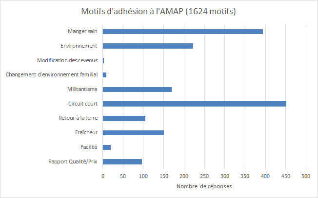
C. Proportion de régimes spécifiques
Malgré une majorité de non-régimes spécifiques, on peut remarquer que le pourcentage de régimes spécifiques (en particulier végétarien) dépasse celui de la moyenne nationale qui est de 2% [Ouest-France, 2019].
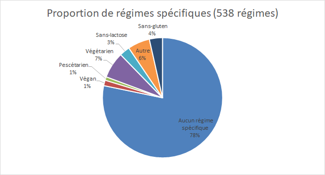
Nombre d'enfants à charge (biaisé)
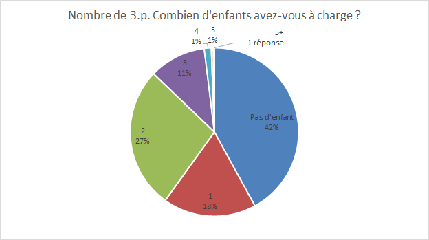
Catégorie socio-professionnelle 2ème personne
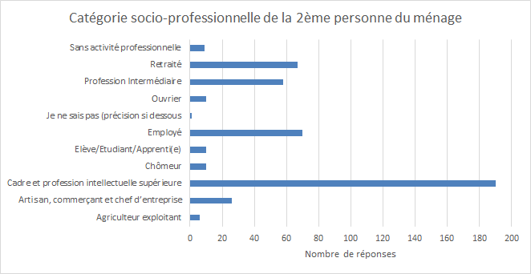
Distribution des AMAP représentées par les AMAPiens sondés
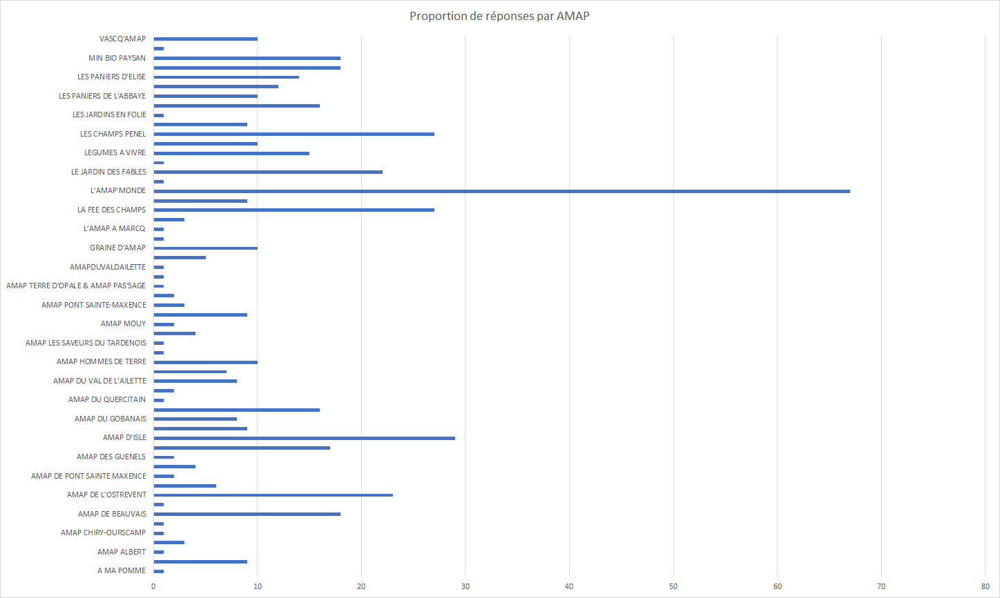
Comparaison du nombre d'AMAP par région.
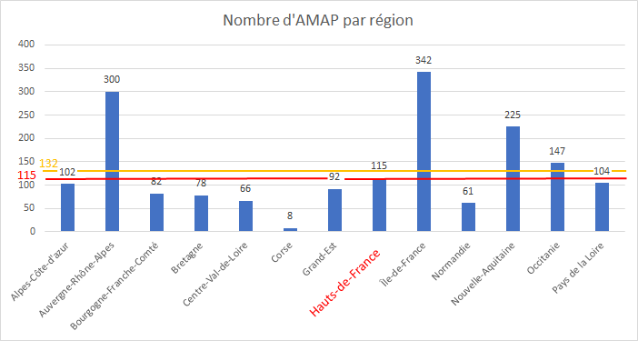
En rouge : moyenne hors Île-de-France.
En orange : moyenne globale.